Tensor-103.2: Hopper GEMM¶
- 원문 제목: Tensor-103.2: Hopper GEMM
- 저자: Tilebot
- 계정: zartbot
- 발행일: 2025년 10월 22일 19:01
TL;DR¶
이 글은 전체 Tensor-103 Gemm series의 두 번째 편이다. 첫 번째 편에서는 CuteDSL 기반 basic gemm kernel implementation을 소개했다. 이번 글에서는 먼저 Basic Gemm의 몇 가지 문제를 분석한 뒤, Hopper의 hardware architecture와 software co-design이 이러한 문제를 어떻게 해결하는지 펼쳐 분석한다. 마지막으로 CuteDSL의 hopper Gemm example을 사용해 자세히 분해해 분석한다. 이 글의 목차는 다음과 같다.
1. Hopper software-hardware feature evolution overview
1.1 Basic Gemm의 문제
1.1.1 cp.async
1.1.2 TensorCore
1.2 Hopper architecture evolution
1.2.1 TMA
1.2.2 CGA
1.2.3 TensorCore & WGMMA
1.2.4 Warp Specialization
2. Hopper new feature details
2.1 CGA
2.1.1 Basic operation
2.1.2 Grid/Cluster Layout
2.2 TMA
2.2.1 TMA architecture analysis
2.2.2 TMA instruction and descriptor
2.2.3 TMA address calculation and request generation
2.2.4 TMA synchronization mechanism
2.2.5 TMA multicast
2.2.6 TMA Reduce
2.2.7 CuteDSL TMA operation
2.3 TensorCore WGMMA
2.3.1 WGMMA programming overview
2.3.2 Swizzle
2.3.3 CuteDSL WGMMA
2.4 CuteDSL asynchronous programming
2.4.1 PipelineAsync
2.4.2 PipelineTmaAsync
2.4.3 PipelineTmaStore
2.5 Summary
3. Hopper DenseGemm
3.1 Host-side function
3.2 Kernel function
3.2.1 Stage 1: initialization and coordinate calculation
3.2.2 Stage 2: pipeline setup and memory partitioning
3.2.3 Stage 3: Prologue
3.2.4 Stage 4: MainLoop
3.2.5 Stage 5: Epilogue
1. Hopper software-hardware feature evolution overview¶
Hopper Gemm 소개도 cuteDSL Github의 Example Hopper_DenseGemm[1]을 참고한다.
1.1 Basic Gemm의 문제¶
1.1.1 cp.async¶
cp.async의 경우 L1Cache를 bypass하여 SMEM에 직접 저장할 수 있고, 완전히 asynchronous한 memory copy를 지원해 copy latency를 hide할 수 있다. 하지만 여전히 몇 가지 문제가 있다.
- cp_size는 최대 16B에 불과하므로, 대량의 data를 copy하려면 CUDA Core가 많은 LD/ST instruction을 issue해야 한다. 따라서 MIO bottleneck이 발생한다.
- boundary check에는 많은 predicate tensor(Predication Tensor)를 구성해야 해서 register resource를 점유하며, 동시에 code complexity도 증가한다.
- address calculation도 thread와 register resource를 점유하므로 compute capability를 낭비한다.
1.1.2 TensorCore¶
앞의 example은 TensorCore를 사용하지 않았지만, TensorCore를 사용하더라도 Ampere architecture에서는 여전히 SMEM에서 RMEM으로 data를 수동으로 load해야 한다. 이는 data movement를 한 번 추가하고 computation complexity도 높인다. 동시에 TensorCore computation scale이 더 커지면 register layout pressure가 매우 커진다.
1.2 Hopper architecture evolution¶
GPU architecture evolution history 14: Hopper architecture deep dive에는 Hopper architecture에 대한 몇 가지 analysis가 있다. 하지만 이어서는 GEMM scenario와 결합해 이러한 design을 펼쳐 이야기한다.
1.2.1 TMA¶
먼저 cp.async 문제를 해결하기 위해 Tile을 대상으로 하는 tensor acceleration engine을 별도로 만들 수 있을까? Tile의 Layout과 source/destination coordinate를 하나의 descriptor로 구성해 이 device에 넘겨 처리하게 하면 된다. TMA는 1D~5D tensor를 지원하며, 특정 BLOCK을 정의해 asynchronous data load와 store를 수행할 수 있다.
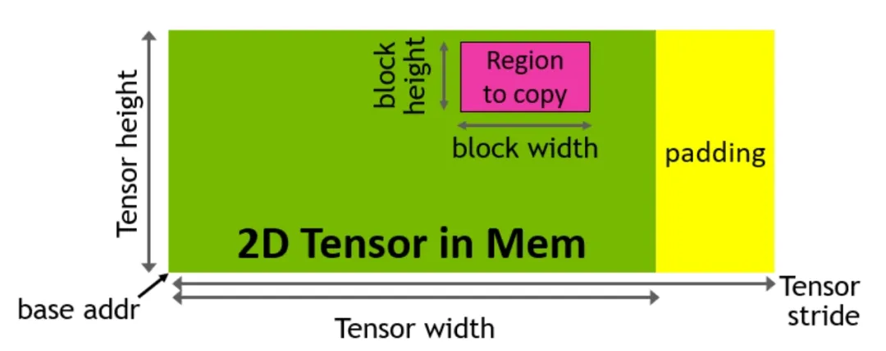
이런 방식은 thread와 register 점유를 해방하고, data copy와 address operation을 asynchronous하게 수행하게 한다. 이렇게 하면 SM의 MIO pressure도 낮아지고 issue되는 instruction 수 역시 크게 줄어든다. 이것이 TMA의 유래이다.
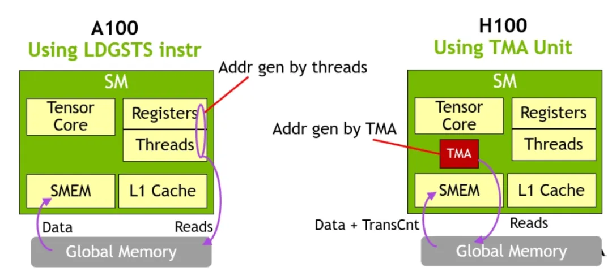
TMA의 concrete operation은 Tensor-003 TensorCore architecture에서도 일부 소개했다. 뒤에서 별도 subsection에서 자세히 설명한다.
1.2.2 CGA¶
아래 그림과 같이 Ampere architecture에서는 matrix multiplication computation 시 같은 Tile이 여러 번 load된다. 연속된 2X2 Tile 두 개를 예로 들면, GMEM에서 SMEM으로 이동할 때 일정한 multicast capability를 지원할 수 있다면 GMEM memory bandwidth를 몇 배 절약할 수 있다.

따라서 local한 몇몇 SM 사이에 SM-to-SM network를 구성할 수 있을까? 이것이 Hopper에서 Thread Block Cluster architecture(또는 Cooperative Grid Array, CGA)를 추가한 이유이며, 여러 SM을 서로 연결해 하나의 Cluster를 구성한다.
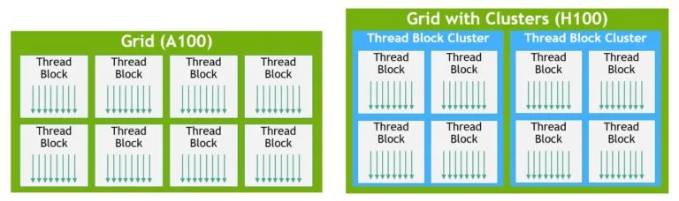
이렇게 하면 Cluster 내부에서 SM과 SM 사이의 memory access가 허용된다. 예를 들어 sC1을 compute하는 SM이 sA1을 sC2의 SM과 share할 수 있고, CGA 안에서 TMA를 사용해 memory를 다른 SM의 SMEM으로 asynchronous copy하는 것도 지원한다. 이렇게 distributed SMEM architecture가 구성되며, DSMEM이라고도 부른다.
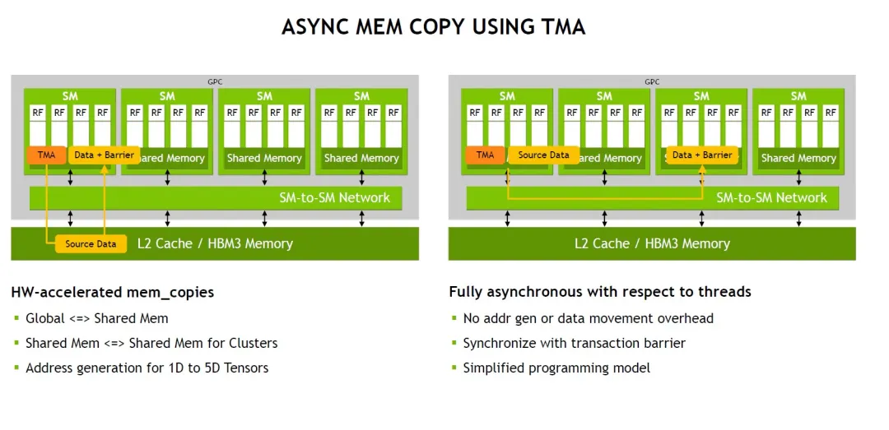
또한 TMA는 CGA를 대상으로 multicast capability도 제공한다. 예를 들어 copy 시 sB1을 multicast 방식으로 GMEM에서 한 번 read하지만, 동시에 sC1과 sC3의 두 SM 안에 넣을 수 있다.
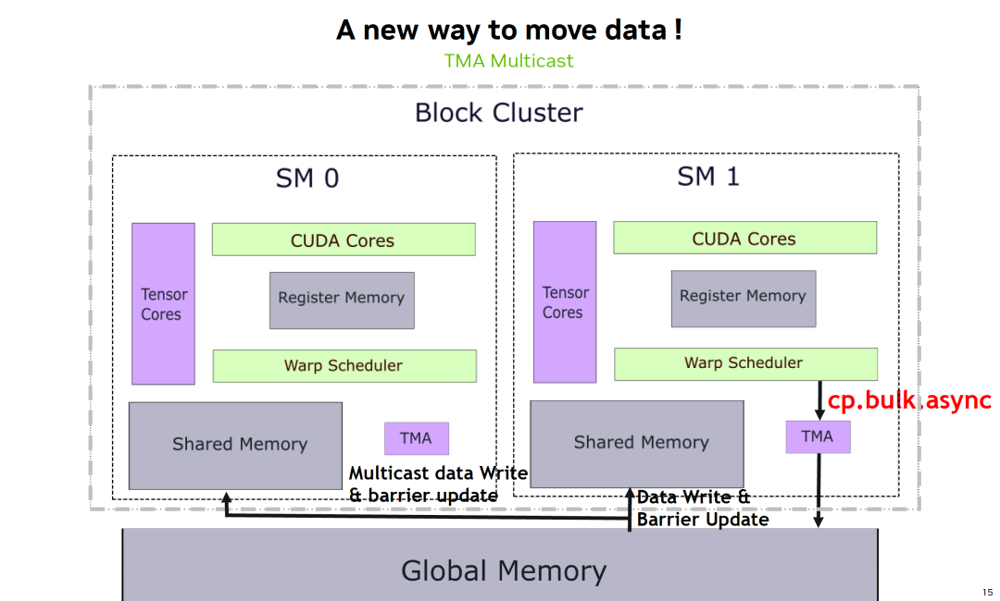
1.2.3 TensorCore & WGMMA¶
그다음 TensorCore를 보자. Ampere의 TensorCore operand는 여전히 register resource를 점유해야 했고, 사용자가 SMEM의 data를 RMEM으로 옮겨야 했다. 따라서 Hopper에서는 이 상황도 optimized되었다. Matrix A와 Matrix B는 모두 SMEM에 직접 배치되어 TensorCore가 read할 수 있으므로 register resource 점유를 피한다. 반면 result Matrix D는 여전히 RMEM에 둔다. 이는 Attention의 Softmax처럼 CUDA Core가 이어서 수행해야 하는 Epilogue 처리가 많기 때문이다. 이후 Blackwell에서는 Tensor Memory도 추가되어 register 점유를 더 줄이고, WMMA issue cost를 더 낮춘다. 구체적인 내용은 Blackwell 절에서 update한다.
| Arch | Matrix A | MatrixB | MatrixD |
|---|---|---|---|
| Volta | RF | RF | RF |
| Ampere | RF | RF | RF |
| Hopper | RF/SMEM | SMEM | RF |
| Blackwell | TMEM/SMEM | SMEM | TMEM |
TensorCore operand가 Hopper에서는 SMEM에도 배치되기 때문에 result matrix Matrix D만 register resource를 점유한다. 따라서 Hopper에서는 하나의 SM 안의 4개 SubCore를 묶고, 연속된 4개 Warp가 WarpGroup을 구성해 TMA와 함께 4개 TensorCore parallel matrix multiplication을 구현할 수 있다. WarpGroup MMA에는 SMEM bandwidth를 낮출 수 있다는 또 다른 advantage도 있다. 아래 그림과 같다.
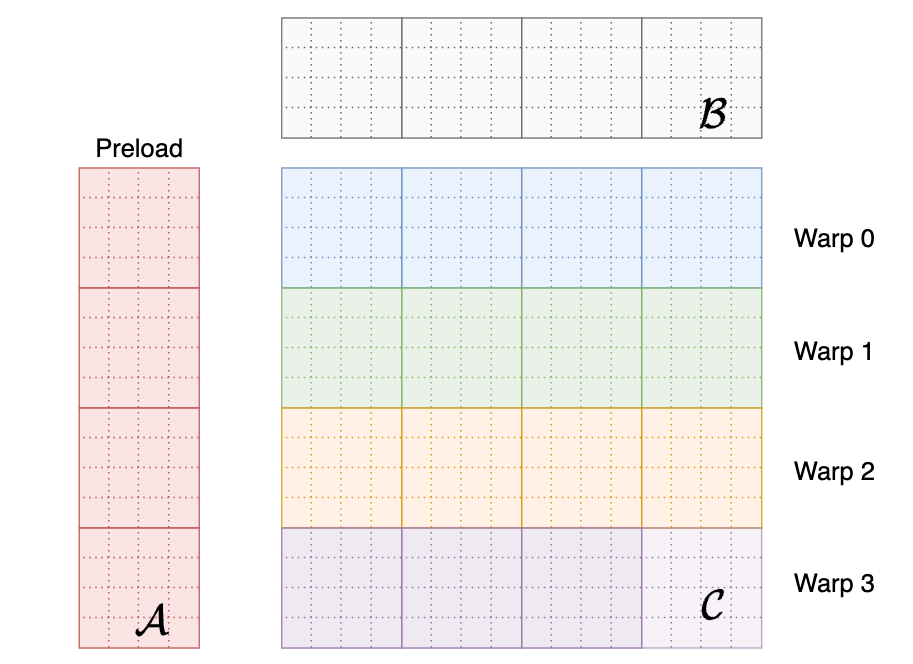
A-Tile을 미리 load할 수 있고, B-Tile은 4개 Warp 안에서 broadcast 방식으로 execute할 수 있다. 이렇게 하면 B-Tile이 TensorCore에 의해 read되는 bandwidth가 4배 낮아지고, 전체 TensorCore operation efficiency도 크게 향상된다. 물론 문제도 있다. 예를 들어 execute 전에 wgmma.fence가 필요하고, 완료 시에도 wgmma.wait\_group wait가 필요하다. 또한 전체 warp group이 execution instruction을 issue해야 한다. 이것도 Nvidia가 최종적으로 Blackwell에서 TMEM을 도입한 또 다른 이유이다. 다른 한편으로 scale도 계속 확대되어 2CTA(2SM)를 통해 execute할 수 있고, DSMEM에서 broadcast하여 TensorCore로 load할 수 있다. 동시에 각 warp는 하나의 thread에 의해 독립적으로 submit될 수 있으며, SMEM의 mbarrier를 통해 completion을 notify한다.

Blackwell의 TensorCore에 대해서는 뒤의 장에서 따로 소개한다.
1.2.4 Warp Specialization¶
TMA가 도입되고, Hopper에서 TensorCore operand도 SMEM에 배치되며, 둘 다 asynchronous call capability를 제공하기 때문에 TMA와 TensorCore를 SM의 accelerator로 사용할 수 있다. SM 내부의 Warp Divergence와 Warp scheduling을 되짚어 보자. 하나의 SM은 한 cycle 안에서 최대 4개의 서로 다른 Warp로부터 각각 instruction 하나를 issue할 수 있다. ALU instruction은 보통 짧고 fixed completion time을 갖지만, TensorCore는 fixed completion time이 있더라도 보통 더 길다. memory access instruction은 보통 cache hit/miss, memory congestion 등의 영향을 받아 시간이 길고 uncontrollable하다. GPU는 많은 Active Warp를 유지해 latency hiding을 구현한다. 어떤 Warp가 long-latency operation(예: memory access) 때문에 stall되면, Warp scheduler는 즉시 ready 상태인 다른 Warp로 전환해 instruction을 execute할 수 있다.
다른 한편, Warp Divergence가 발생하면 각 Warp의 SIMT 특성 때문에 performance가 저하된다. 예를 들면 아래 그림과 같다.
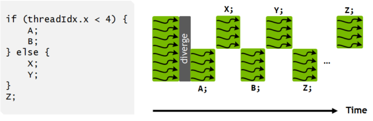
timeline 위에 많은 bubble이 존재해 efficiency에 영향을 주는 것과 같다.
Warp Specialization(WASP)은 CUDA-DMA[2]와 Singe compiler[3] 작업을 기반으로 널리 쓰이게 되었다. 본질적으로 Warp 내부의 Divergence를 Warp 사이로 옮기는 것이다. 서로 다른 Warp는 서로 독립적인 context에서 execute되므로, Divergence가 Warp 사이에서 발생할 때 Warp Scheduler scheduling을 통해 추가 cost가 도입되지 않는다.
다른 한편 TensorCore와 TMA 같은 accelerator 도입으로 asynchronous call capability가 생겼다. 따라서 WASP를 통해 dedicated Warp를 사용해 TMA 또는 Tensor Core matrix multiplication instruction을 issue할 수 있다. TMA Warp는 copy instruction을 issue하고 data가 multiplication 준비를 마치면 Tensor Core Warp에 notify한다. Tensor Core Warp는 data가 consume된 뒤 TMA Warp에 notify하여 memory가 free 상태이고 더 많은 copy에 사용할 수 있음을 알린다. 아래 그림과 같다.
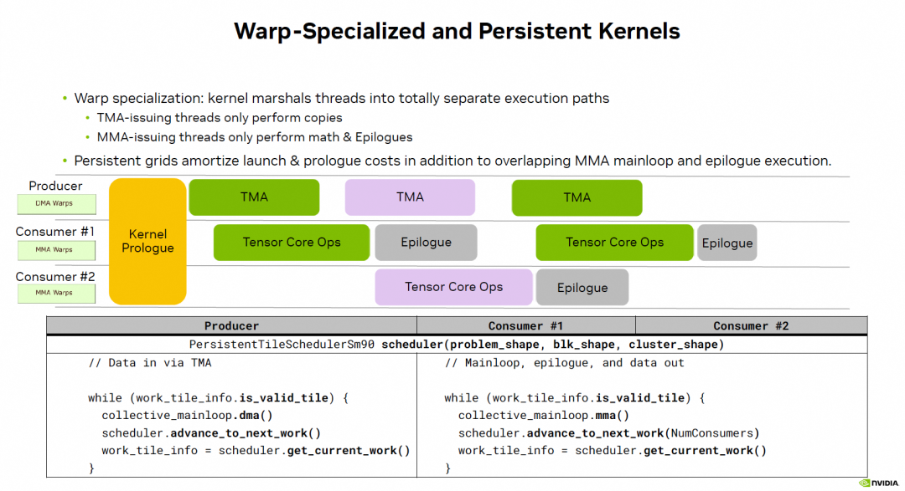
그다음 WASP의 performance benefit을 분석해 보자. 먼저 위 그림과 같이 TMA 같은 memory copy는 Cache Miss나 memory bandwidth의 영향을 dynamic하게 받는다. Warp Specialization을 통해 Warp Scheduler scheduling으로 이러한 dynamic latency를 hide할 수 있으므로 TensorCore utilization을 maximize할 수 있다.
다른 한편 TMA Warp는 더 이상 address를 계산하거나 predicate tensor로 boundary check를 수행할 필요가 없고 thread resource도 점유할 필요가 없다. 따라서 이 Warp의 register resource usage가 훨씬 작다. 그러므로 setmaxnreg를 통해 register resource를 consumer의 MMA warp에 allocate할 수 있으며, cuteDSL에서는 cute.arch.warpgroup\_reg\_alloc(self.num\_regs\_mma)를 사용해 수정할 수 있다.
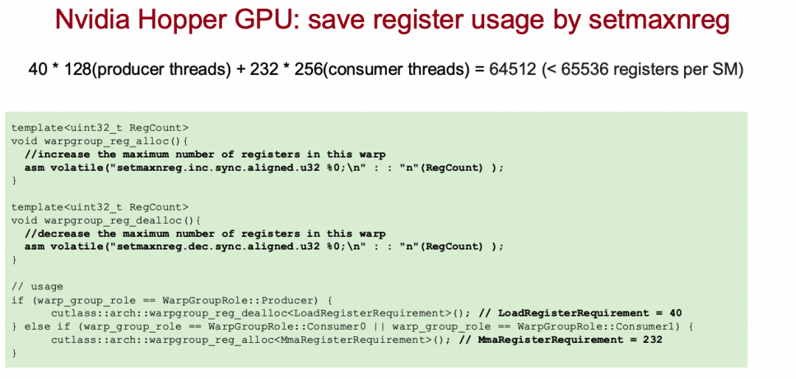
하지만 WASP를 사용하면 programmer가 전체 pipeline을 어떻게 정교하게 arrange하고 synchronized data dependency를 처리할지에 대한 challenge도 생긴다는 점에 주의해야 한다. 예를 들어 Hopper의 FlashAttn에서는 SM이 TMA와 TensorCore GEMM operation을 issue하는 동시에 softmax computation 같은 많은 CUDA Core 관련 work도 execute해야 한다.
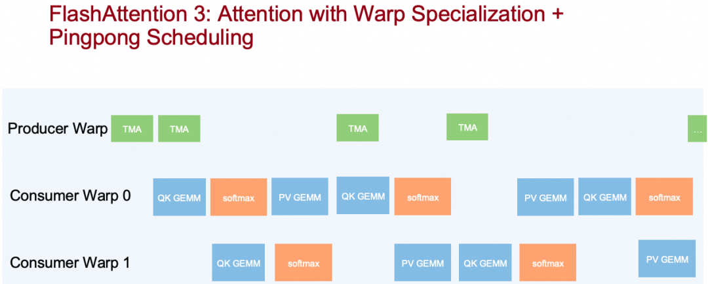
마지막으로 warp specialization의 또 다른 benefit은 서로 다른 Warp의 instruction 수가 줄어드는 데서 온다. 이렇게 하면 Warp execution 시 I-Cache overhead도 줄어든다. 그렇지 않으면 일부 복잡한 Attn computation process에서 더 많은 I-Cache가 필요하거나 I-Cache Miss가 발생해 performance loss로 이어질 수 있다.
WASP에 대해서는 참고할 만한 좋은 문서가 몇 편 있다. Unweaving Warp Specialization[4], 15-779 Lecture 6: Advanced CUDA Programming: Warp Specialization[5], GPGPU Arch(2) - Hopper WarpSpecialization Pingpong/Cooperative design discussion[6], WASP: Exploiting GPU Pipeline Parallelism with Hardware-Accelerated Automatic Warp Specialization[7]를 참고하면 된다.
2. Hopper new feature details¶
2.1 CGA¶
Hopper GPU 내부에는 local SM-to-SM network가 추가되어, SM 사이에서 SMEM을 share하고 Distributed SMEM을 구성할 수 있다.
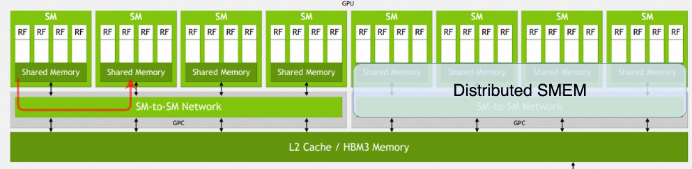
software level에서는 cluster라는 hierarchical structure가 추가되었다. 즉 Thread Block(CTA,Block)<--Thread Block Cluster(CGA,Cluster)<---Device(Grid)이다.
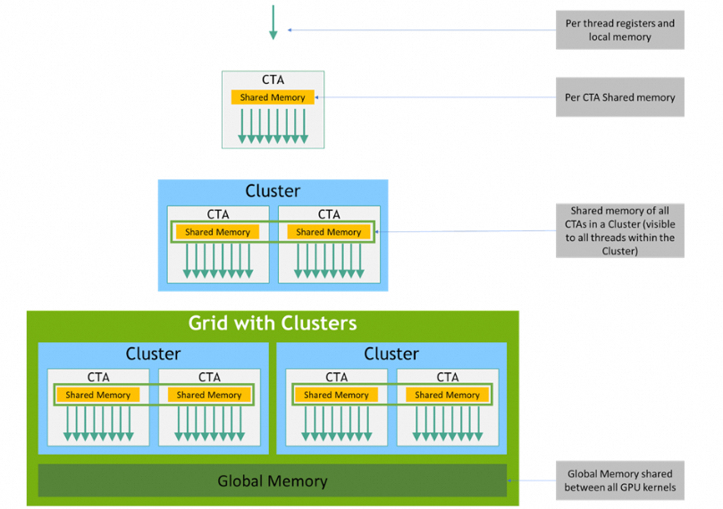
2.1.1 Basic operation¶
CGA를 사용하고 해당 cluster-index를 얻는 test code는 다음과 같다.
import torch
import cutlass
import cutlass.cute as cute
import cuda.bindings.driver as cuda
@cute.jit
def cluster_demo(
stream: cuda.CUstream
):
num_threads = 2
cluster_kernel().launch(grid = (4,6,2),
cluster = (2,2,1),
block = (num_threads,1,1),
stream = stream)
@cute.kernel
def cluster_kernel():
tidx, _, _ = cute.arch.thread_idx()
bidx, bidy, bidz = cute.arch.block_idx()
cidx, cidy, _ = cute.arch.cluster_idx()
cdimx, cdimy, _ = cute.arch.cluster_dim()
cluster_id = cidx + cdimx * cidy
cute.printf("tid {} block-id {},{},{} cluster-id {},{} id {}",
tidx, bidx,bidy,bidz,cidx,cidy,cluster_id)
return
torch_stream = torch.cuda.Stream()
stream = cuda.CUstream(torch_stream.cuda_stream)
cluster_demo(stream)
concrete cluster layout은 아래 그림과 같다.
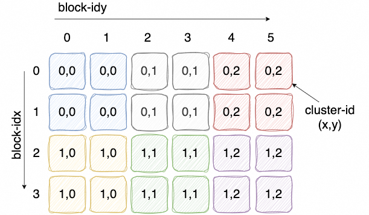
2.1.2 Grid/Cluster Layout¶
Hopper platform에서 execute되는 TensorCore 기반 WGMMA instruction이 지원하는 Shape은 다음과 같다.
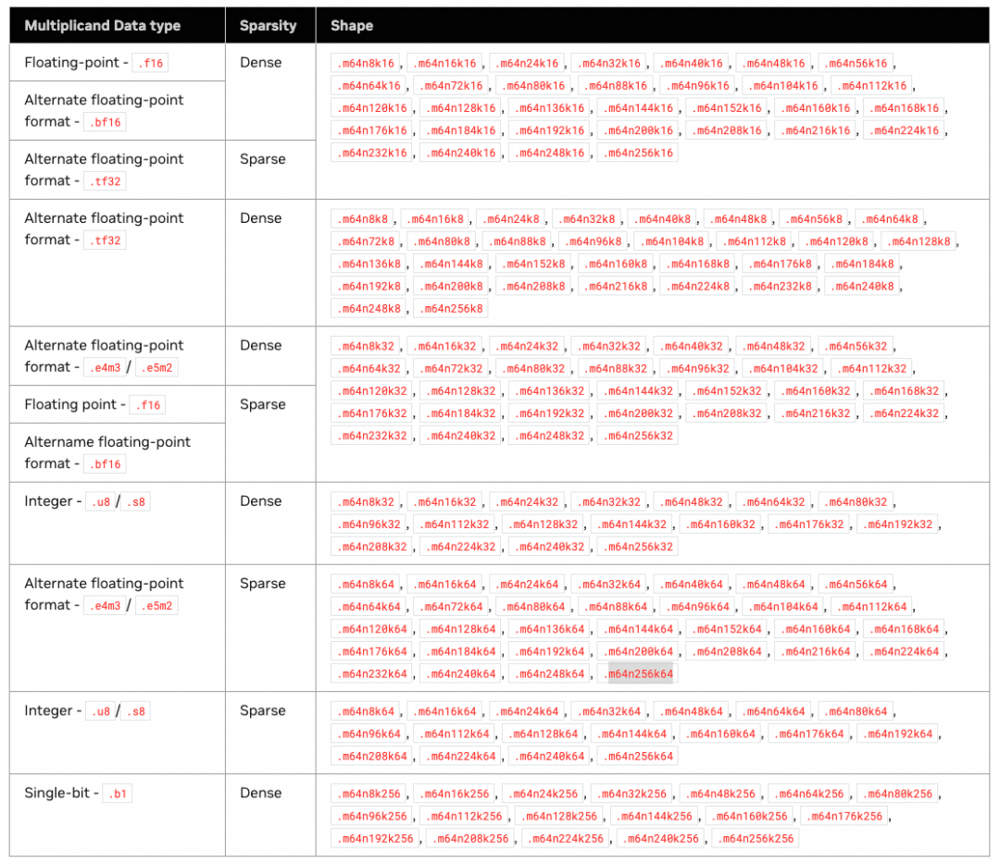
BF16을 예로 들면 DenseGemm K=16이고, 이는 여기서 선택하는 Tile_MN, 즉 bM과 bN의 size를 constrain한다. 하나의 WarpGroup은 4개 warp, 즉 128개 thread를 사용한다. bM x bN이 128x256이면 각 thread에는 256개 register가 필요하다. Hopper에서 single thread register의 maximum count는 255개이다. 하나의 thread register 수가 limit에 도달하면 Register spill이 발생한다. 즉 사용하지 않아야 할 일부 Reg가 Local Memory에 임시 저장되며, 이는 Kernel performance를 크게 낮춘다. 다른 한편 WGMMA는 Accum matrix도 RMEM 안에 있으므로 모든 thread가 참여해야 한다. Register spill이 TensorCore와 이러한 Accum matrix가 사용하는 register에서 발생하면 TensorCore operation efficiency에 매우 큰 영향을 준다.
따라서 일반적인 방법은 thread 수를 늘려 두 개 Warp가 협력해 WGMMA operation을 execute하게 하는 것이다. 즉 Tile을 load한 뒤 2개의 64 x 256 sub-block으로 더 나누어 operation을 수행한다. 이렇게 하면 전체 register usage가 변하지 않는 상황에서 각 thread의 register 수를 절반으로 줄일 수 있다. atom_layout_mnk를 정의해 이러한 추가 split을 처리할 수 있다.
from typing import Tuple, Type
import math
import torch
import cuda.bindings.driver as cuda
import cutlass
import cutlass.cute as cute
import cutlass.utils as utils
import cutlass.utils.hopper_helpers as sm90_utils
from cutlass.cute.runtime import from_dlpack
@cute.jit
def cluster_layout(
a : cute.Tensor,
b : cute.Tensor,
c : cute.Tensor,
):
tile_shape_mn = (128,128) # choice: [(128, 128), (128, 256), (128, 64), (64, 64)]
tile_shape_mnk = (*tile_shape_mn, 1) # K-dim will be updated later
cluster_shape_mn =(2,1) # choice: [(1, 1), (2, 1), (1, 2), (2, 2)]
# for larger tiles, a single WarpGroup operation causes RegisterSpill,
# so two warp groups are needed for the operation
atom_layout_mnk = (
(2, 1, 1)
if tile_shape_mnk[0] > 64 and tile_shape_mnk[1] > 128
else (1, 1, 1)
)
mma_warp_groups = math.prod(atom_layout_mnk)
num_threads_per_warp_group = 128
threads_per_cta = mma_warp_groups * num_threads_per_warp_group
WGMMA instruction은 Tile computation scale에 대해 특정 shape constraint를 갖기 때문에, 최종 split과 Layout을 결정하려면 K-dim size를 더 계산해야 한다. 먼저 \(A, B, C\) 세 tensor의 datatype과 Majorness를 얻는다. 그다음 M=64, N=bN으로 Tiled_MMA를 구성하고, Tiled_MMA shape 안의 k-dim을 사용한다. 아래 그림은 "Targeting NVIDIA Hopper in MLIR"[8]에서 참고했다.
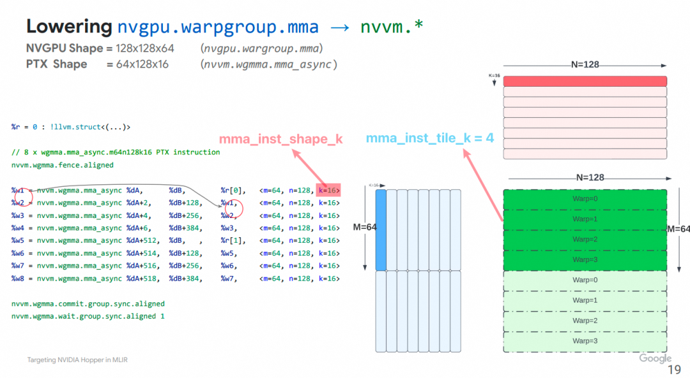
# get Tensor datatype and Majorness
a_dtype = a.element_type
b_dtype = b.element_type
acc_dtype = c.element_type
a_layout = utils.LayoutEnum.from_tensor(a)
b_layout = utils.LayoutEnum.from_tensor(b)
c_layout = utils.LayoutEnum.from_tensor(c)
# construct Tiled_MMA
tiled_mma = sm90_utils.make_trivial_tiled_mma(
a_dtype,
b_dtype,
a_layout.sm90_mma_major_mode(),
b_layout.sm90_mma_major_mode(),
acc_dtype,
atom_layout_mnk,
tiler_mn=(64, tile_shape_mnk[1]),
)
mma_inst_shape_k = cute.size(tiled_mma.shape_mnk, mode=[2])
mma_inst_tile_k = 4
tile_shape_mnk = (
tile_shape_mnk[0],
tile_shape_mnk[1],
mma_inst_shape_k * mma_inst_tile_k,
)
cute.printf("tile-mma {} tile_shape_mnk{}",tiled_mma.shape_mnk,tile_shape_mnk)
#output
tile-mma (64,128,16) tile_shape_mnk(128,128,64)
이 시점에서 Tile_MNK computation은 완료되었다. 마지막으로 \(C\) Tensor의 Shape에 따라 필요한 grid를 계산한다. 예를 들어 M=N=K=4096이고 Batch dimension L=16일 때 C_Tiler=(128,128)이므로 gC의 Layout은 (128,128),(32,32,16)이다. 그다음 cluster_shape에 따라 grid dimension을 계산한다.
c_tiler = (tile_shape_mnk[0], tile_shape_mnk[1]) #c_shape = tile_M,tile_N
gc = cute.zipped_divide(c,tiler=c_tiler)
cluster_shape_mnl = (*cluster_shape_mn, 1) #cluster dimz = 1
clusters = cute.ceil_div(cute.get(gc.layout, mode=[1]).shape, cluster_shape_mnl)
grid = tuple(x * y for x, y in zip(clusters, cluster_shape_mnl))
cute.printf("gC Layout {} grid {}",gc.layout, grid)
#output
gC Layout ((128,128),(32,32,16)):((4096,1),(524288,128,16777216)) grid (32,32,16)
2.2 TMA¶
2.2.1 TMA architecture analysis¶
TMA implementation detail은 patent US20230289292A1[9]에서 찾을 수 있다.
TMA를 구현하는 가장 근본적인 이유는 다음과 같다. GPU에서 matrix operation을 위한 dedicated unit(예: Tensor Core)의 performance가 크게 향상되면서 data supply가 새로운 bottleneck이 되었다. 전통적인 memory access 방식, 즉 processor core(CUDA Core)가 load/store instruction을 execute하는 방식은 복잡한 address calculation을 수반하고 귀중한 register resource를 점유한다. 또한 data가 main memory(Global Memory)에서 on-chip shared memory(Shared Memory)로 transfer되기를 기다리는 동안 compute unit이 idle 상태가 될 수 있어 overall performance와 energy efficiency를 제한한다. LDGSTS 같은 asynchronous copy instruction도 여전히 software(즉 processor core에서 run되는 program)가 각 data block의 address를 계산해야 하므로, 상당한 software overhead와 performance loss를 가져온다.

이 문제를 해결하기 위해 Nvidia는 dedicated memory access hardware circuit, 즉 Tensor Memory Access Unit(TMAU)을 설계했다. core idea는 다음과 같다.
- Offload: 복잡하고 시간이 많이 드는 multidimensional data address calculation과 data movement control logic을 general-purpose processing core(예: SM 안의 CUDA Core)에서 dedicated hardware unit TMAU로 offload한다.
- Asynchronous execution: TMAU는 processor core와 독립적으로 large-scale data block transfer task를 asynchronous하게 execute할 수 있다. processor core는 high-level request 하나만 보내면 이후 다른 computation task를 계속 execute할 수 있으므로 memory access latency를 효과적으로 hide한다.
- Abstraction and simplification: TMAU는 tensor 같은 multidimensional(1D~5D) data structure의 logical layout을 이해할 수 있다. programmer는 더 이상 복잡한 physical memory address를 수동으로 계산할 필요가 없고, 더 높은 dimension의 coordinate를 통해 data를 request할 수 있다. 이는 programming model을 크게 단순화하고 development/debugging cost를 낮춘다.
- Boundary check: 기존 data load process에서는 보통 CUDA Core가 predicate tensor를 구성해 memory access boundary를 판단해야 했지만, TMAU에는 boundary check capability가 built-in되어 있다. 이 역시 register pressure를 크게 줄인다.
architecture 측면에서 각 SM은 하나의 TMAU와 tightly coupled되어 있다. 이러한 one-to-one configuration은 access latency와 resource contention을 줄인다.
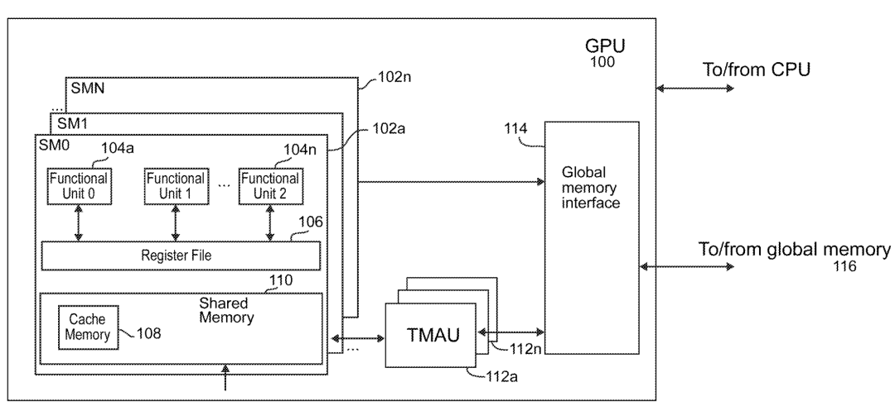
아래 그림과 같이 TMAU는 서로 다른 level의 memory에 access할 수 있다. 여기에는 다음이 포함된다.
- Global Memory 같은 external memory, 예를 들면 HBM/GDDR DRAM, 나아가 PCIe를 통한 Host Memory access
- SM 내부의 shared memory(Shared Memory, SMEM)
- internal interconnect network를 통한 distributed shared memory(Distributed Shared Memory, DSMEM) access

TMAU internal structure는 다음과 같다.
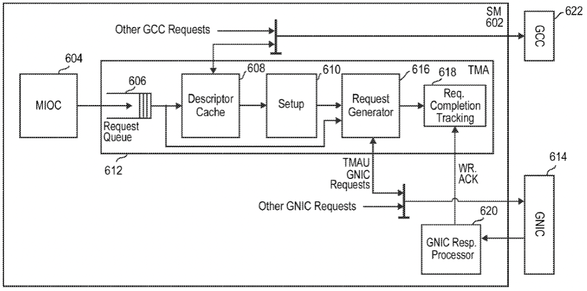
| 번호 | component name | function description |
|---|---|---|
| 604 | memory input/output controller | SM과 TMAU 사이의 interface 역할을 하며, SM에서 오는 memory access request를 receive한다. |
| 606 | internal request queue | SM에서 오는 request를 cache한다. 두 종류의 request를 처리할 수 있다: tensor request(descriptor 필요)와 non-tensor request(linear data block). |
| 608 | descriptor cache | 최근 사용된 tensor descriptor를 cache한다. 동일 tensor에 대한 access는 보통 temporal locality를 가지므로, 이 cache는 descriptor 획득 latency를 크게 줄일 수 있다. cache miss가 발생하면 global memory에서 descriptor를 prefetch한다. |
| 610 | Setup Block | request queue에서 request를 꺼내고, tensor request이면 descriptor cache에서 descriptor를 가져온다. 모든 parameter(descriptor와 request 자체에서 온 것)를 parse하고 correctness check를 수행하며, 이후 request generator에 필요한 모든 computation parameter를 준비한다. |
| 616 | request generator | TMAU의 core engine이다. Setup Block이 준비한 parameter를 receive하고, multidimensional tensor space(또는 linear address space)를 traverse하며, 각 sub-block의 global memory address와 shared memory address를 iterative하게 계산하고, out-of-bounds condition을 check하며, memory subsystem으로 보낼 low-level request를 생성한다. |
| 618 | response completion tracking circuit | issue된 각 sub-request의 state를 track하여 TMAU와 SM의 asynchronous operation을 구현한다. 모든 sub-request가 완료되면 synchronization mechanism을 trigger한다. |
| 614 | generic network interface controller | GPU 내부 memory interconnect network와 communication하여 request를 send하고 response를 receive한다. |
| 620 | GNIC response processor | GPU 내부 memory interconnect network와 communication하며, received response를 처리한다. |
Note: non-tensor request의 경우 descriptor를 처리할 필요가 없으므로 606 request queue에서 616 request generator로 바로 jump할 수 있다.
concrete workflow:
- SM initiates request: SM 위의 thread 하나가 coupling된 TMAU에 request를 send한다. tensor request의 경우 tensor descriptor pointer와 block coordinate 정보도 포함한다.
- TMAU generates sub-requests: TMAU가 request를 receive하면 asynchronous work를 시작한다. request를 parse하고, data block size와 memory system constraint(예: L2Cache Line size)에 따라 일련의 sub-block physical address를 자동으로 계산하며, 여러 low-level memory access request를 생성해 memory subsystem에 send한다.
- Data transfer: memory subsystem은 이러한 sub-request에 response하고 data를 target location으로 transfer한다. TMAU는 data를 SM의 SMEM에 직접 write할 수 있고, register file(RF)과 L1 data cache를 bypass하여 resource usage와 불필요한 cache pollution을 피한다.
- Synchronization: TMAU 내부에는 completion tracking circuit이 있다. 모든 sub-request가 완료되고 전체 data block이 성공적으로 transfer되면, TMAU는 synchronization mechanism(예: shared memory 안의 counter 또는 barrier update)을 통해 SM에 notify한다. SM 위의 thread는 이 synchronization object를 check하여 data가 ready인지 확인할 수 있다.
2.2.2 TMA instruction and descriptor¶
SM이 TMA instruction 하나를 issue할 때, 보통 instruction이 최대한 concise하기를 바란다. 하지만 tensor-based TMA의 경우 tensor dimension(dimensions), 각 dimension의 size, element size, 각 dimension의 stride 등 많은 정보를 carry해야 한다. 따라서 TMA design은 descriptor(Descriptor)를 구성해 GMEM에 두고, TMA instruction에는 그 pointer만 carry하도록 한다. descriptor는 아래 그림과 같다.
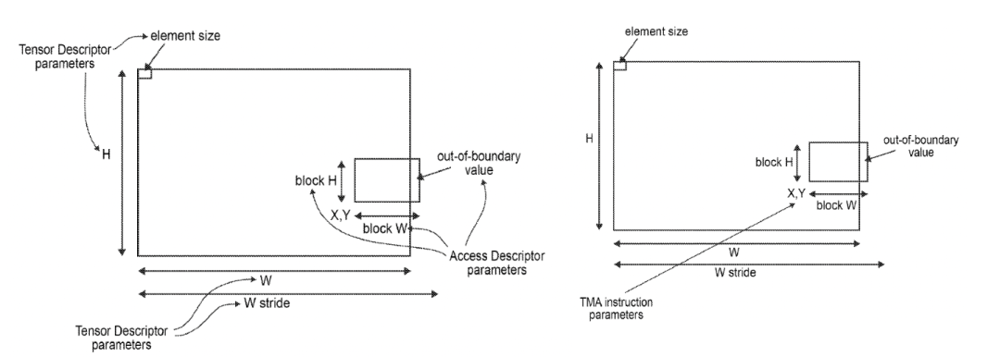
-
Tensor Descriptor: GMEM에 저장되는 data structure이며, tensor의 static attribute를 정의한다. SM은 request를 initiate할 때 이 descriptor의 pointer만 제공하면 된다.
-
parameter example: tensor dimensions, 각 dimension의 size, element size, 각 dimension의 stride. -
Access Descriptor: 보통 tensor descriptor 안에도 포함되며, access pattern의 attribute를 정의한다.
-
parameter example: access block size(block/box size), out-of-bounds fill value. -
TMAU Instruction Parameters: SM이 request를 initiate할 때 직접 제공하며, 이번에 구체적으로 어떤 data block에 access할지 지정하는 데 사용된다.
-
parameter example: block의 starting coordinate (e.g., (x,y,z)), target SMEM address, synchronization object address.
TMA에는 Descriptor Cache가 있으므로, CuteDSL에서도 다음 방식으로 GMEM에서 Descriptor를 Prefetch할 수 있다.
cute.nvgpu.cpasync.prefetch_descriptor(tma_atom_a)
cute.nvgpu.cpasync.prefetch_descriptor(tma_atom_b)
2.2.3 TMA address calculation and request generation¶
non-tensor mode의 address generation은 매우 simple하다. SM의 request instruction이 다음을 직접 제공한다.
- source address (GMEM의 starting address)
- target address (SMEM의 starting address)
- total amount of data to transfer
이때 TMA의 address generation logic은 simple linear address incrementer로 degenerate된다. i번째 data block(보통 16 bytes)에 대한 address calculation은 다음과 같다.
tensor mode에서는 tensor descriptor에 따라 생성해야 한다. 먼저 Setup Block에서 필요한 정보를 analyze해 얻는다.
-
Tensor Descriptor에서 얻는 것:
-
tensor base address (Base Address).
- tensor dimensions (Dimensions).
- 각 dimension의 total size (Tensor Size).
- 각 dimension의 stride (Tensor Stride).
-
element size (Element Size).
-
Access Descriptor(보통 tensor descriptor 안에도 있음)에서 얻는 것:
-
requested block size (Box Size), 즉 각 dimension에서 load할 element 수.
-
traversal stride (Traversal Stride).
-
SM에서 온 instruction에서 얻는 것:
-
requested block의 starting coordinate. 이는 logical position이며, 예를 들어
(x, y, z)이다.
그다음 request generator 내부에는 hardware state machine이 구현되어 있으며, 그 behavior는 N-dimensional nested loop와 equivalent하다(N은 tensor dimension).
inner loop의 각 iteration에서 TMA는 현재 계산된 logical coordinate coord_i가 tensor descriptor에 정의된 TensorSize, 즉 각 dimension의 size(tensorSize[0], tensorSize[1], ...)를 초과했는지 check한다. 초과했다면 TMA는 이 invalid address에 access하지 않고, 해당 element를 out-of-bounds로 mark하며, 이후 target address에 write할 때 preset fill value(0 또는 special NaN)를 사용한다.
마지막으로 generated address에 대해 TMA는 각 element마다 independent memory access request를 생성하지 않는다. address가 연속적인 여러 element를 intelligent하게 merge하여 memory subsystem(예: L2 cache)에 대한 하나의 request로 만든다. request size는 보통 L2 cache line size(예: 128B)이다. 이 step은 memory bus utilization을 maximize한다.
마지막으로 memory access의 Bank conflict를 피하기 위해 swizzle 방식으로 address를 생성해야 한다. TMA는 data를 shared memory에 write할 때 Swizzle을 자동으로 execute한다. 이 process는 programmer에게 semi-transparent하다. programmer는 data가 Swizzle되었다는 사실은 알아야 하지만, Swizzle을 직접 구현할 필요는 없다.
먼저 base address와 LogicalOffset에 따라 logical address를 계산한다.
그다음 Swizzle function을 적용해 physical address를 생성한다.
이 Swizzle function은 보통 address bit의 XOR operation을 기반으로 한다. hardware로 구현하기 매우 빠르고 저렴하다.
Example: simplified 64KB shared memory, 32 banks, each bank is 4 bytes wide¶
- 하나의 address는 하나의 4Byte word를 uniquely identify할 수 있다.
- address의 lower 5 bits(address[4:0])는 보통 그것이 어떤 Bank에 속하는지 결정하는 데 사용된다.
- address의 high bits(address[...:5])는 그것이 해당 Bank의 어느 row에 있는지 결정하는 데 사용된다.
Case without Swizzle:¶
하나의 Warp의 32개 thread가 access하는 address가 각각 0, 32, 64, 96, ...라면, 이 address binary representation의 lower 5 bits는 모두 00000이다. 이는 32개 thread가 모두 Bank 0에 access한다는 뜻이며, 심각한 Bank Conflict를 유발한다.
Case with Swizzle:¶
TMA는 Swizzle function을 적용할 수 있다. 예를 들면 다음과 같다.
더 구체적으로 hardware level에서는 다음과 같을 수 있다.
여기서 우리는 logical address의 high bits(row information)를 사용해 low bits(Bank information)를 "disturb"한다. 이제 thread가 logical address 0, 32, 64, 96, ...에 access할 때:
- logical address 0: Addr_logical is ...00000 00000. physical Bank ID is 00000 XOR 00000 = 0.
- logical address 32: Addr_logical is ...00001 00000. physical Bank ID is 00000 XOR 00001 = 1.
- logical address 64: Addr_logical is ...00010 00000. physical Bank ID is 00000 XOR 00010 = 2.
- ...
원래 같은 Bank에 access하던 address sequence는 Swizzle 후 Bank 0, 1, 2, ... , 31로 완벽하게 분산되어 Bank Conflicts가 제거된다.
2.2.4 TMA synchronization mechanism¶
Ampere에서는 cp.async가 보통 하나의 thread에 의해 submit되고, 그 thread가 직접 commit_group과 wait_group을 수행한다. 따라서 thread에만 visible하면 된다. 그래서 가장 직접적인 방법은 scoreboard 위에 barrier를 하나 두거나, SMEM 위에 spin lock 또는 semaphore mechanism을 두는 것이다. 보통 prologue stage에서 cp.async access 묶음을 bulk submit하고, cp.async.commit_group을 수행한 뒤 cp.async.wait_group N으로 operation 완료를 기다린다. 아래 그림과 같다.
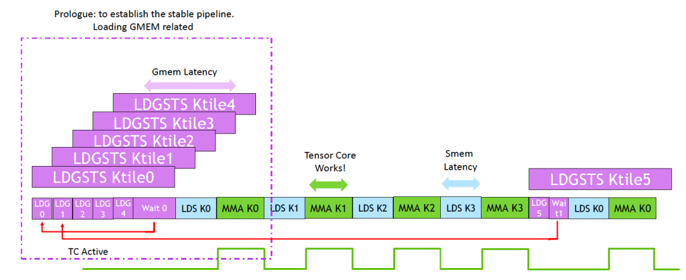
반면 TMA operation에서는 보통 하나의 thread가 TMA instruction을 submit하지만, 다른 thread도 result를 알아야 한다. DSMEM 기반 SMEM->SMEM 또는 GMEM->multicast scenario에서는 cross-CTA synchronization mechanism도 필요하다. 따라서 Hopper에는 memory barrier synchronization mechanism이 도입되었고, TMA memory copy의 direction에 따라 두 가지 completion mechanism을 지원할 수 있다.
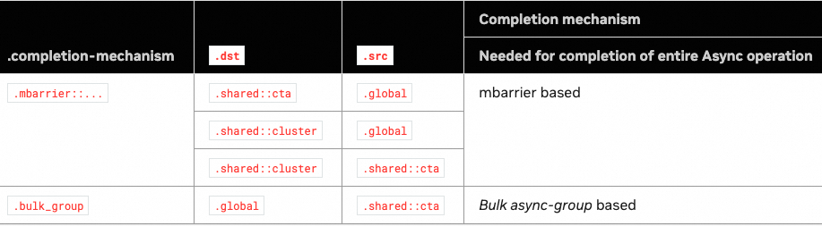
SMEM->GMEM의 경우도 보통 하나의 thread가 직접 TMA instruction을 issue하고, 직접 commit과 wait를 하면 된다. 아래에서는 warp specialization의 TMA Producer와 WGMMA Consumer를 예로 mbarrier mechanism을 펼쳐 소개한다. Bilibili에는 "GPU computing and programming model evolution: throughput and latency balance in asynchronous compute programming"[10]이라는 video가 있는데, Hopper에서는 두 set의 semaphore로 표현해야 한다.
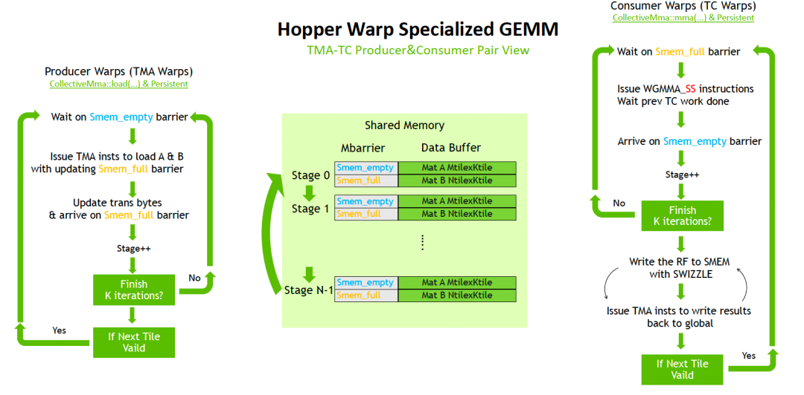
Producer TMA가 일부 data를 SMEM에 넣으면, smem_full Mbarrier를 통해 Consumer에게 data가 ready되었음을 알려야 한다. 마찬가지로 Consumer가 computation을 완료하면 semaphore sem_empty로 Producer에게 data를 refill하라고 notify해야 한다. Hopper부터 Mbarrier structure는 다음과 같다.
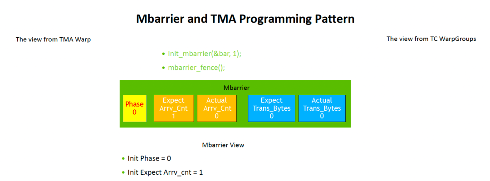
그 내부에는 thread 수와 관련된 counter와 몇 Byte를 transfer했는지에 대한 counter가 있으며, expected value와 current completed count를 포함한다. 그리고 Phase bit가 flip을 통해 completion state를 나타낸다. 먼저 위 그림과 같이 Mbarrier를 initialize해야 한다. TMA는 하나의 thread가 instruction을 issue하므로 Expect Arr_Cnt=1이고, 다른 값은 모두 0이다.
조금 더 풀어 말하면, 여기의 이 data structure는 Hopper에서 외부에 설명하는 Async Transaction Barrier에 해당한다.
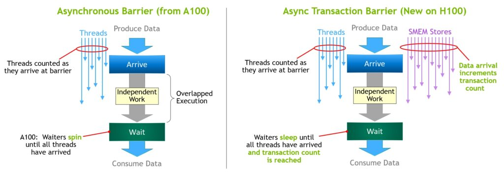
그림 왼쪽의 Threads cnt는 Mbarrier structure에서 orange 부분에 해당하고, 오른쪽의 Transaction cnt는 Mbarrier의 blue 부분에 해당한다.
그다음 TMA가 request 하나를 initiate한다. TMA는 이 instruction을 이 Barrier에 attach하고, 16KB data를 transfer해야 함을 알린다. 이어서 mbarrier\_arrive\_expect operation을 수행하면, 이때 Actual Arrv_Cnt가 1이 되고 barrier의 Expect TransBytes도 update된다.
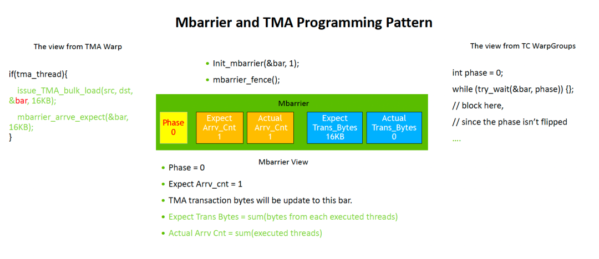
그다음 data가 계속 transfer되면서 TMA의 Req Completion Tracking module은 GNIC가 return한 Write ACK에 따라 Actual Trans_Bytes를 update한다. 이때 Expect와 Actual Trans_Bytes가 아직 일치하지 않으므로 Mbarrier Phase bit는 여전히 0이고, Consumer는 Phase bit가 flip될 때까지 계속 block된다.
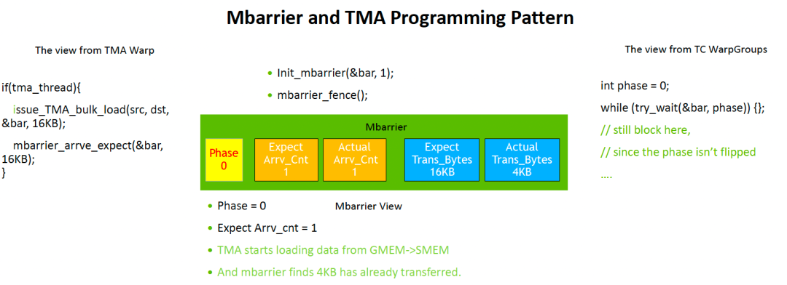
16KB data transfer가 완료되면 아래 그림과 같이 hardware가 이 state에 따라 Phase bit를 flip한다. 이 bit를 flip하는 것은 atomic operation이다.
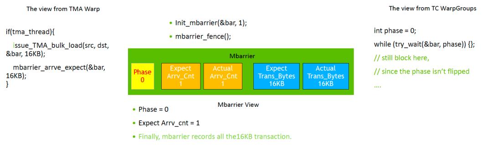
flip이 완료되면 Consumer block이 해제되고, WGMMA 같은 computation operation을 execute하기 시작한다.
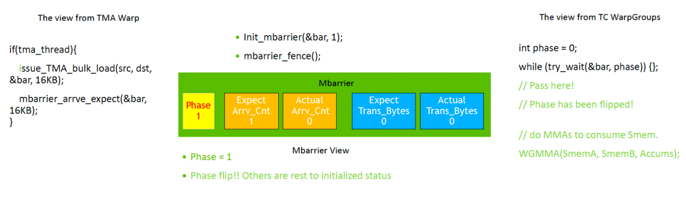
그다음 Consumer는 data를 consume하기 시작한다. 앞에서 말한 Barrier는 data가 이미 full이고 Consumer가 consume할 수 있음을 나타내므로 smem_full Mbarrier라고도 부른다. 이때 또 다른 Mbarrier가 필요하다. semantic상 이 data가 이미 consume 완료되어 free 상태임을 나타내며, 즉 smem_empty Mbarrier이다. 이때 Producer는 이 empty barrier의 phase에 따라 blocking operation을 수행한다. 주의할 점은 WGMMA가 WarpGroup의 128개 thread가 참여해 compute하므로 init\_mbarrier(&bar\_empty,128)이며, expect arrv_cnt에서 128은 이 128개 thread를 나타낸다는 것이다.
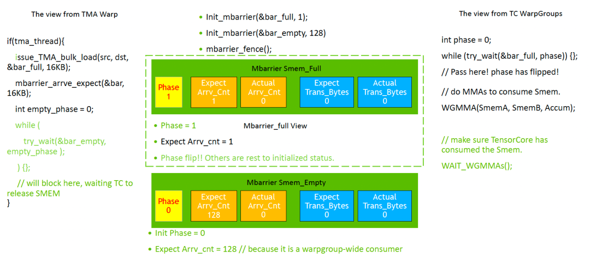
그다음 consumer는 TensorCore가 computation을 완료하기를 기다린 뒤, mbarrier\_arrive(&bar\_empty)를 사용해 smem_empty 안의 actual arrv_cnt를 update한다. 이때 Phase는 여전히 0이고 Producer는 계속 block 상태이다.
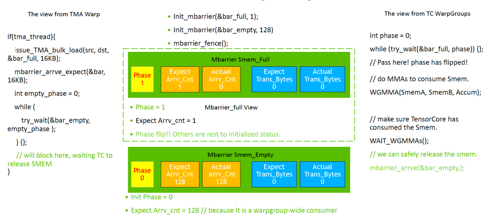
expect와 actual data가 일치하면, 다음 cycle에서 hardware가 다시 atomic operation으로 smem_phase bit를 flip한다. Producer는 block에서 해제되어 data transfer를 계속 execute한다.
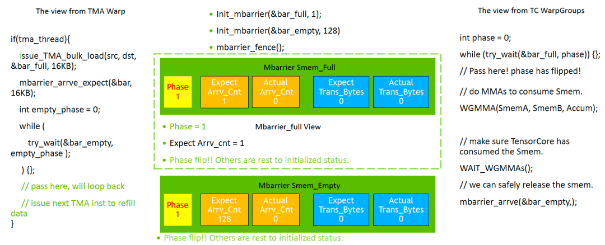
그다음 두 번째 iteration을 진행할 때 MBarrier의 Phase=1이므로, 이때 Producer/Consumer는 다음 update 시 phase bit flip이 1에서 0으로 일어난다는 것을 기록해야 한다.
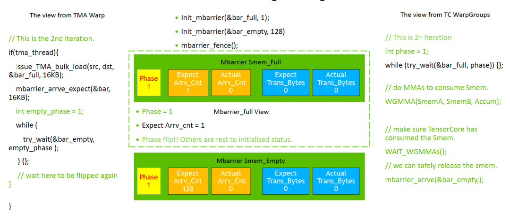
1.2.4에서 Warp Specialization을 소개했듯이, 이러한 두 semaphore 방식을 통해 hardware가 warp scheduling을 수행할 수 있다. 기존 multi-stages와 비교하면 Producer와 Consumer code가 완전히 decouple된 뒤 두 semaphore의 coordination과 asynchronous execution을 통해, 전체 process에서 하나가 block되면 다른 하나가 execute될 수 있음을 볼 수 있다. 따라서 TensorCore의 Warp를 완전히 채울 수 있고, 중간에 TMA operation을 기다리는 code를 삽입해 TensorCore utilization에 영향을 줄 필요가 없다. 동시에 setmaxregn을 통해 Consumer가 더 많은 register resource를 갖게 하여 register spill을 피할 수 있다. 마지막으로 이러한 separated operation은 SM 안의 I-Cache usage도 줄여, 복잡한 large-scale program이 가져오는 I-Cache miss 영향을 피한다.
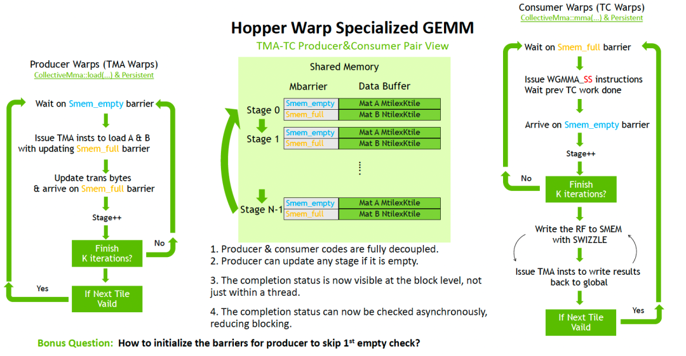
물론 이러한 Phase flip과 cnt/bytes operation은 매우 복잡하다. Cutlass에서는 일부 pipeline encapsulation을 수행하고, advance method를 통해 multiple stage circular buffer pipeline 사용을 구성한다.
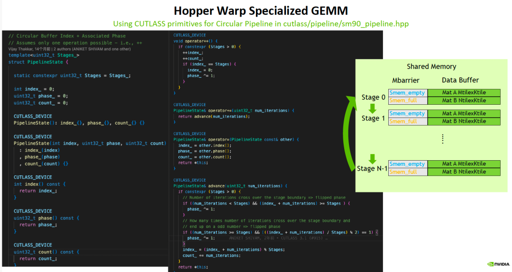
동시에 Producer TMA Warp와 Consumer TC WarpGroup을 대상으로 사용하기 더 편한 API layer도 encapsulate했다.
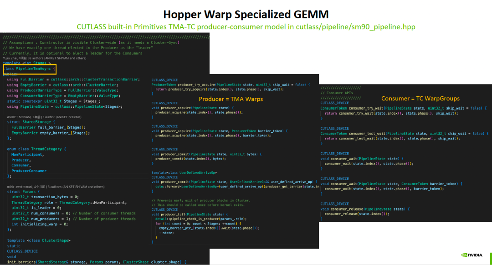
뒤의 몇 subsection에서 CuteDSL 위에서 이 process를 다시 자세히 분석한다.
2.2.5 TMA multicast¶
Hopper에 SM-to-SM network가 추가되어 DSMEM이 구성되었으므로, matrix operation 시 GMEM에서 SMEM으로 한 번만 copy한 뒤 SM-to-SM을 통해 한 SM의 SMEM에서 다른 SM으로 copy할 수 있다. 이렇게 하면 GMEM bandwidth를 절약할 수 있다. 아래 그림과 같다.
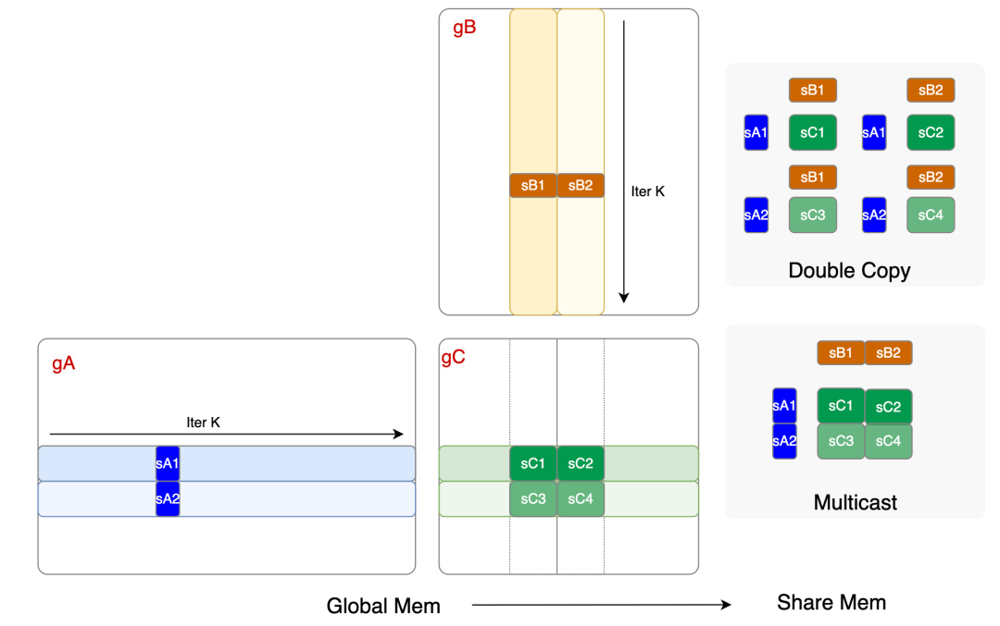
따라서 TMA에도 multicast capability가 추가되었다. 먼저 하나의 SM에서 TMA multicast instruction을 issue하고, data arrival write와 barrier update가 이루어진다.
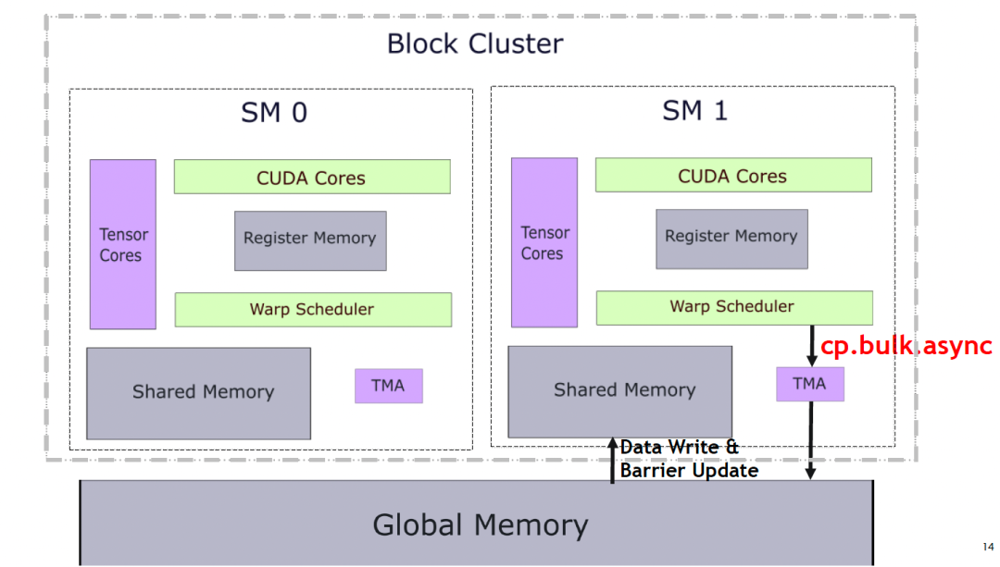
이때 TMA Unit에 몇 가지 extension을 만들 수 있다. operation instruction에 Multicast가 포함되어 있으므로, 또 다른 SMEM-to-SMEM ST operation을 trigger하여 다른 SM으로 write할 수 있다.
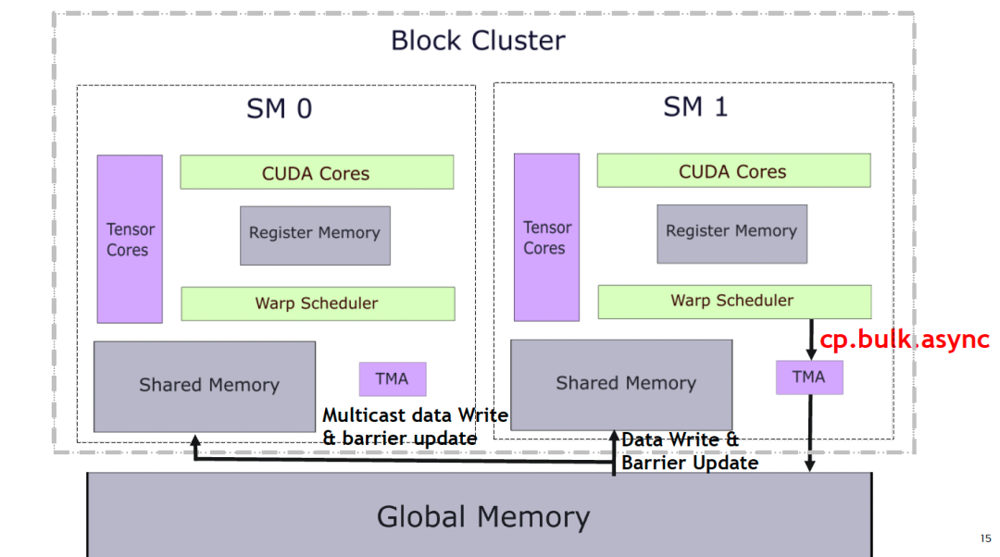
2.2.6 TMA Reduce¶
Reduce sum은 Split-K GEMM에서 필수적인 operation이고, reduce min/max도 attention mechanism에서 자주 사용된다. 일반적인 reduce operation은 CTA SMEM의 value를 GMEM tensor 안의 Tile 하나에 accumulate해야 한다. 여기에는 한 번의 GMEM read, original data를 CTA의 SMEM 또는 RMEM으로 load, xor | and | or | add | min | max | inc | dec operation execute, 그리고 다시 한 번 GMEM write가 포함된다.
따라서 TMA는 Reduce support를 추가했으며, SMEM->GMEM reduce operation만 지원한다. 하지만 공개 patent를 보면 TMAU에는 reduce computation operation을 처리하기 위한 vector compute unit이 없다. 동시에 Nvidia도 TMA Reduce implementation을 완전히 공개하지 않았으므로, 몇 가지 추측을 해 본다.
GMEM data가 NOC를 지나 SM으로 두 번 이동하는 overhead를 낮추기 위해, 이 reduce operation의 vector device는 SM 외부에 있어야 하고 CUDA Core의 ALU를 reuse하지 않을 것이다. 그리고 여러 SM이 함께 reduction을 수행해야 할 때는 여러 SM 사이의 cooperation과 computational consistency 문제도 처리해야 하므로 매우 복잡해진다. 따라서 TMA Reduce implementation에서는 몇 가지 constraint를 두었다. source address는 CTA-Level SMEM만 지원하고, destination address는 GMEM만 지원한다.
cp.reduce.async.bulk.dst.src.completion_mechanism{.level::cache_hint}.redOp.type
[dstMem], [srcMem], size{, cache-policy}
.dst = { .global }
.src = { .shared::cta }
.completion_mechanism = { .bulk_group }
.level::cache_hint = { .L2::cache_hint }
.redOp= { .and, .or, .xor,
.add, .inc, .dec,
.min, .max }
.type = { .f16, .bf16, .b32, .u32, .s32, .b64, .u64, .s64, .f32, .f64 }
그다음 TMA reduce에 의해 호출되는 각 reduction operation은 independent하고 relaxed-order로 처리된다. 하지만 이러한 operation이 atomic operation으로 design되며, operation 시 address가 16B에 align된다는 점도 고려해야 한다. 따라서 L2Cache가 XBAR에 연결되는 port에 일부 Reduction Logic이 추가되었을 것으로 추측한다. 이러한 operation에는 큰 compute power가 필요하지 않고, TMA 자체가 asynchronous operation이며 다른 SM memory access도 있으므로 Reduction Logic이 L2 bandwidth에 도달할 필요도 없다. 예를 들어 2TB/s reduction bandwidth가 필요하다면, FP32 Reduction computation 처리 시 compute requirement는 500Gflops에 불과하다.
2.2.7 CuteDSL TMA operation¶
CuteDSL의 TMA operation definition은 다음과 같다.
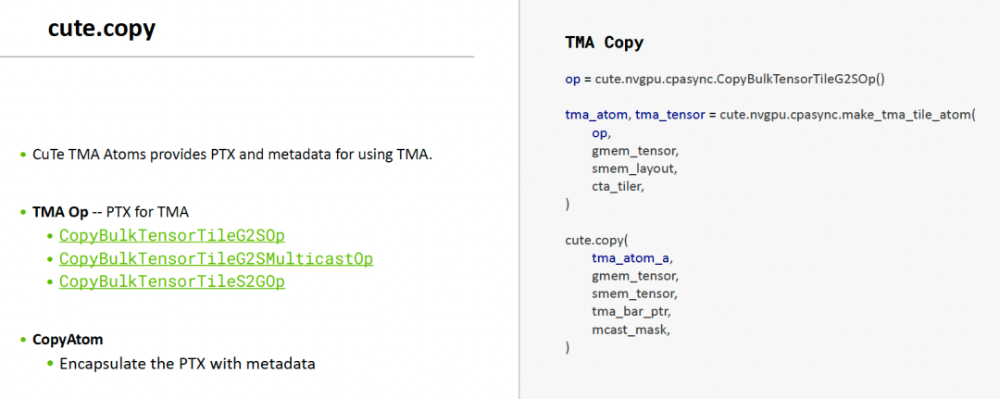
아래의 simple example로 CuteDSL의 TMA operation에 익숙해져 보자. 대략적인 flow는 먼저 zipped\_devide를 통해 gmem_tensor를 얻고, smem layout을 생성한 뒤, 이를 기반으로 tma_atom을 만드는 것이다. SMEM memory management에서는 cuteDSL의 struct 기능을 사용해 Mbarrier와 SMEM 위 tensor storage space를 함께 struct로 구성한다.
from typing import Tuple, Type
import torch
import cuda.bindings.driver as cuda
import cutlass
import cutlass.cute as cute
import cutlass.utils as utils
import cutlass.utils.hopper_helpers as sm90_utils
from cutlass.cute.runtime import from_dlpack
@cute.jit
def tma_example(
A : cute.Tensor,
):
tile_shape_mn = (32,32)
# use zipped_divide for tiling and compute required block layout
gA = cute.zipped_divide(A, tiler=tile_shape_mn)
print(f"zipped_divide A Layout {gA}")
grid_dim = (*gA.shape[1],1)
a_dtype = A.element_type
a_layout = utils.LayoutEnum.from_tensor(A)
# make_smem_layout_atom function performs swizzle based on datatype and major dimension size.
# concrete Swizzle operation is described in detail in a later section.
a_smem_layout_atom = cute.nvgpu.warpgroup.make_smem_layout_atom(
kind=sm90_utils.get_smem_layout_atom(
a_layout,
a_dtype,
major_mode_size=tile_shape_mn[0],
),
element_type=a_dtype
)
# generate smem_layout based on target tile_shape and layout atom
a_smem_layout = cute.tile_to_shape(
atom = a_smem_layout_atom,
trg_shape=tile_shape_mn,
order=(0,1)
)
cute.printf("atom layout {}\n smem layout {}",a_smem_layout_atom,a_smem_layout)
# atom layout S<2,4,3> o 0 o (8,32):(32,1)
# smem layout S<2,4,3> o 0 o ((8,4),(32,1)):((32,256),(1,0))
tma_copy_size_a = cute.size_in_bytes(
a_dtype, cute.select(a_smem_layout, mode=[0,1])
)
cute.printf("tma cp size {}",tma_copy_size_a)
# tma cp size 2048
# construct struct containing mbar pointer and data in smem
buffer_align_bytes = 128
@cute.struct
class SharedStorage:
mbar_ptr: cute.struct.MemRange[cutlass.Int64, 2]
sA: cute.struct.Align[
cute.struct.MemRange[a_dtype, cute.cosize(a_smem_layout)],
buffer_align_bytes
]
smem_size = SharedStorage.size_in_bytes()
# generate tma_atom and tma_tensor
a_tma_atom, a_tma_tensor = cute.nvgpu.cpasync.make_tiled_tma_atom(
op = cute.nvgpu.cpasync.CopyBulkTensorTileG2SOp(), # use TMA
gmem_tensor = A,
smem_layout= cute.select(a_smem_layout, mode=[0,1]),
cta_tiler = tile_shape_mn
)
cute.printf("TMA ATOM ThrID {} \nTV-Layout\n Src {}\n Dst {}\n TMA Tensor {}",
a_tma_atom.thr_id,
a_tma_atom.layout_src_tv,
a_tma_atom.layout_dst_tv,
a_tma_tensor
)
# TV-Layout
# Src (1,1024):(0,1)
# Dst (1,1024):(0,1)
# TMA Tensor (0,0) o (4096,4096):(1@1,1@0)
kernel(
a_tma_atom,
a_tma_tensor,
a_smem_layout,
tma_copy_size_a,
cute.make_layout(tile_shape_mn),
SharedStorage,
).launch(
grid = grid_dim,
block = (256,1,1),
smem = smem_size
)
@cute.kernel
def kernel(
tma_atom: cute.CopyAtom,
tma_tensor : cute.Tensor,
smem_layout: cute.ComposedLayout,
tma_copy_size_a : int,
cta_tiler: cute.Layout,
SharedStorage: cutlass.Constexpr
):
bidx, bidy, _ = cute.arch.block_idx()
tidx, _, _ = cute.arch.thread_idx()
warp_idx = cute.arch.warp_idx()
# first warp group acts as producer
is_producer = warp_idx < 4
# prefetch TMA descriptor as early as possible
if warp_idx == 0:
cute.nvgpu.cpasync.prefetch_descriptor(tma_atom)
cute.arch.sync_threads()
# allocate SMEM and get MBarrier pointer from struct
smem = cutlass.utils.SmemAllocator()
storage = smem.allocate(SharedStorage)
mbar_ptr= storage.mbar_ptr.data_ptr()
# get Tensor from struct
sA = storage.sA.get_tensor(smem_layout.outer, swizzle=smem_layout.inner)
# initialize MBarrier
with cute.arch.elect_one():
cute.arch.mbarrier_init(mbar_ptr, cnt=1)
cute.arch.mbarrier_init_fence()
#######################################
# TMA Producer
#######################################
if is_producer :
warp_idx_in_wg = cute.arch.warp_idx() % 4
if warp_idx_in_wg == 0:
# get Local Tile based on block coordinates
tiled_tma_A = cute.local_tile(
tma_tensor,
tiler = cta_tiler.shape,
coord = (bidx , bidy)
)
# for warpgroup
sA_grouped = cute.group_modes(sA, 0, 2)
tiled_tma_A_grouped = cute.group_modes(tiled_tma_A, 0, 2)
tAsA, tAgA = cute.nvgpu.cpasync.tma_partition(
atom=tma_atom,
cta_coord=0, # for CGA; CGA is not enabled, so set to 0
cta_layout=cute.make_layout(1), # CGA is not used, so Layout is (1)
smem_tensor=sA_grouped,
gmem_tensor=tiled_tma_A_grouped,
)
if bidx == 0 and bidy == 0 and tidx == 0:
cute.printf("gA: {}", tiled_tma_A.layout)
cute.printf("gA_grouped: {}", tiled_tma_A_grouped.layout)
cute.printf("sA: {}", sA.layout)
cute.printf("sA_grouped: {}", sA_grouped.layout)
cute.printf("tAgA: {}", tAgA.layout)
cute.printf("tAsA: {}", tAsA.layout)
# gA: (32,32):(1@1,1@0)
# gA_grouped: ((32,32)):((1@1,1@0))
# sA: ((8,4),(32,1)):((32,256),(1,0))
# sA_grouped: (((8,4),(32,1))):(((32,256),(1,0)))
# tAgA: (((32,32),1)):(((1@0,1@1),0))
# tAsA: ((1024,1)):((1,0))
# execute Copy
cute.copy(tma_atom, tAgA, tAsA, tma_bar_ptr=mbar_ptr)
# update TMA smem_full barrier expected tx-bytes
with cute.arch.elect_one():
cute.arch.mbarrier_arrive_and_expect_tx(mbar_ptr, tma_copy_size_a)
if bidx == 0 and bidy == 0 and tidx == 0:
cute.printf("PRODUCER: TMA copy issued.")
#######################################
# Consumer
#######################################
else:
# wait for smem_full barrier
cute.arch.mbarrier_wait(mbar_ptr, 0)
if tidx == 128 and bidx == 0 and bidy == 0 :
cute.printf("CONSUMER: TMA load finished.")
cute.printf("Tile in SMEM {}",sA)
return
M,N = 4096, 4096
a = torch.arange(0.0, M *N, device="cuda", dtype=torch.bfloat16).reshape(M,N)
_a = from_dlpack(a, assumed_align=16)
tma_example(_a)
2.3 TensorCore WGMMA¶
2.3.1 WGMMA programming overview¶
Hopper의 TensorCore operation은 granularity가 더 커졌다. 4개 warp(128개 thread)가 하나의 WarpGroup을 구성하고, 하나의 SM 안에서 동시에 TensorCore를 호출해야 한다.
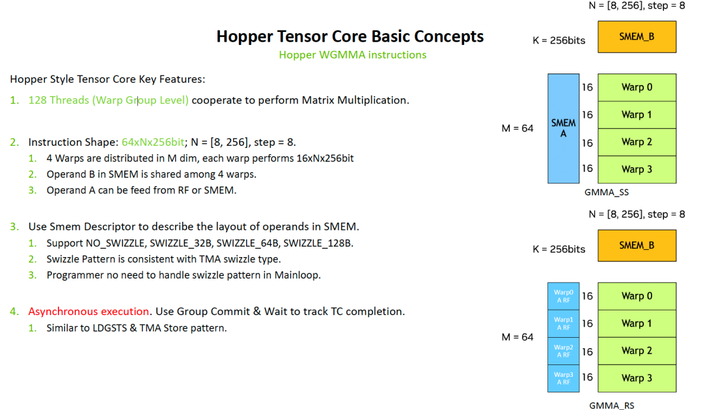
그다음 오른쪽 그림에서 볼 수 있듯이, A operand는 SMEM에서도 올 수 있고 register에서도 올 수 있지만, B는 SMEM 안에 있어야 한다. 또한 네 개 Warp가 M dimension을 따라 concatenate되므로 operand B는 SMEM에만 둘 수 있고, TensorCore 위에서 네 개 Warp로 broadcast된다. programmer는 각 Warp가 instruction(WGMMA_instr)에서 16xNx256bit operation을 지원하고, 전체 WarpGroup은 instruction level에서 concatenate되어 64xNx256bit를 지원한다는 점만 알면 된다.
그다음 Shmem descriptor는 operand가 SMEM 안에서 갖는 Layout을 정의한다. 특히 중요한 점은 hardware Swizzle 방식을 사용해 TMA와 WGMMA의 Pattern이 일치하도록 보장한다는 것이다.
가장 중요한 점은 WGMMA TensorCore operation도 asynchronous operation으로 바뀌었다는 것이다. commit\_group과 wait\_group을 사용해 check한다. common instruction sequence는 다음과 같다.
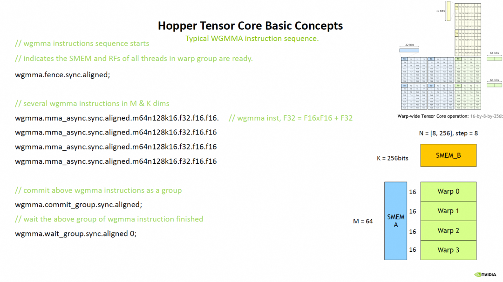
먼저 data가 이미 ready되었음을 나타내는 fence가 필요하고, 이어서 M과 K direction을 따라 여러 wgmma instruction을 send한다. instruction send가 완료되기를 기다린 뒤, 이러한 모든 in-flight instruction을 package하여 commit을 완료하고, wait\_group을 통해 completion을 기다린다. 아래는 concrete flow이다.
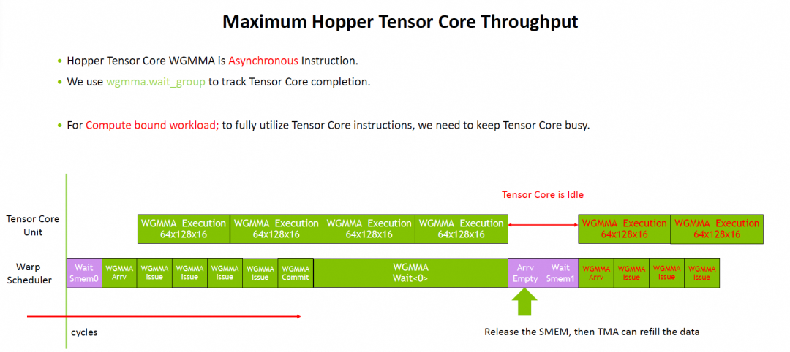
먼저 Producer TMA가 data를 SMEM으로 read하는 flow를 initiate한다. 그다음 Consumer로서 smem_full Barrier, 즉 그림의 purple block을 기다려야 한다. 그 뒤 WGMMA instruction을 issue하고 commit_group을 수행한다. 이어서 wait_group으로 WGMMA completion을 기다리고, 다음 smem_full Barrier가 완료되었는지 check한 뒤 다음 round의 WGMMA instruction을 issue한다. 하지만 이런 방식에서는 중간에 TensorCore가 일정 시간 idle 상태가 된다. 이를 꽉 채우려면 pipeline을 재배치하고 multi-stage pipeline 방식을 사용해야 한다. WGMMA commit_group과 wait_group 사이의 시간에 다음 slot의 SMEM이 완료되었는지 check하고 다음 round의 WGMMA instruction을 issue한다.
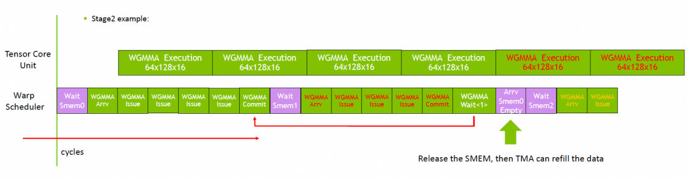
concrete code는 다음과 같으며, 실제로는 smem_pipe_release와 smem_pipe_read라는 두 counter가 있다. 초기에는 둘이 같고, 예를 들면 둘 다 0이다. Prologue에서는 먼저 data load가 완료되었는지 check한다(위 그림의 purple Wait Smem 0). 완료되었으면 WGMMA를 issue한다(위 그림의 흰색 글자 WGMMA operation). 그다음 ++smem_pipe_read를 수행하고, 다음 SMEM block이 Ready인지 검사한다(위 그림의 purple Wait Smem 1). Ready이면 두 번째 stage WGMMA를 다시 issue한다(위 그림의 red text WGMMA). 이때 smem_pipe_read=2, smem_pipe_release=0이고, 이후 stable pipeline Mainloop에 들어간다. 위 오른쪽 그림과 같다. 다만 Release memory 시에는 항상 이전 stage의 memory를 release한다.
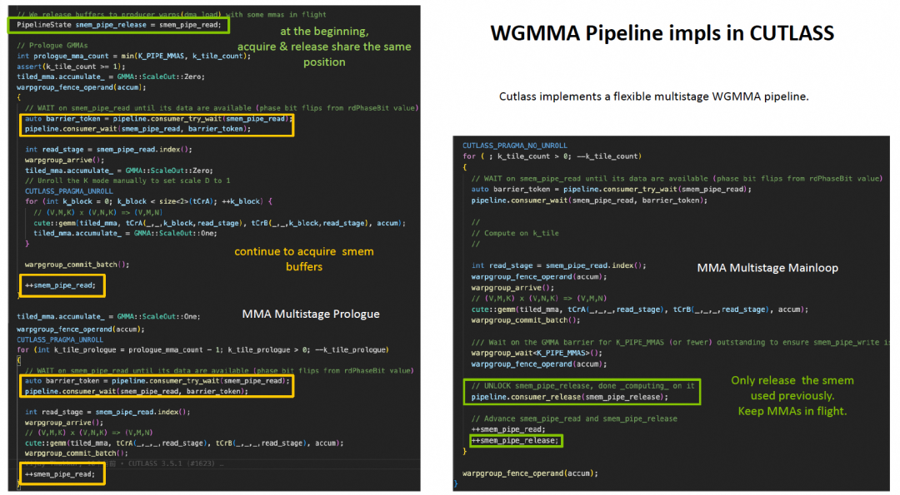
2.3.2 Swizzle¶
먼저 chip의 physical 관점에서 보면, SMEM은 32개 bank를 포함하고 각 bank가 32bits인 structure이다. 예를 들어 float s[64] array의 storage format은 다음과 같다.
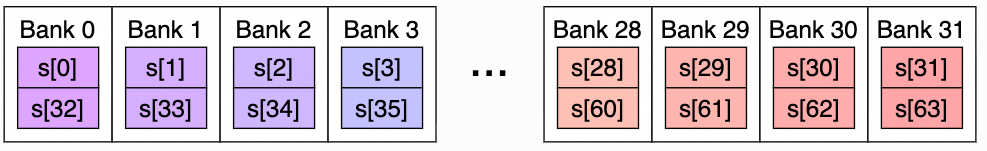
Hopper TensorCore의 경우 Warp-Group Level instruction으로 64xNx256bits를 지원한다. 여기서 N=[8,256],step=8이다. Warp-Level TensorCore instruction은 16x8x256bits이다.
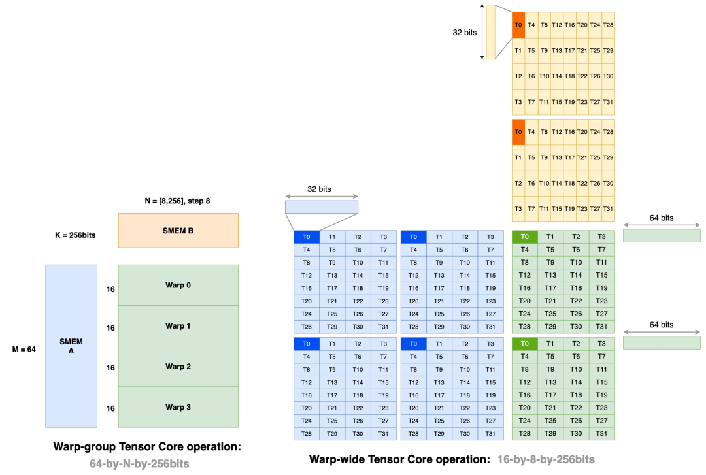
예를 들어 BF16의 WGMMA Shape가 64xNx16이라고 하자. A matrix를 예로 들면 이는 64x16 matrix이며, M dimension에서 4개 Warp가 concatenate되어 구성되고, 각 Warp는 16x16 submatrix 하나를 execute한다. 이 16x16 matrix는 실제로 2x2개의 Core Matrix로 구성되며, 각 Core Matrix dimension은 8x128bits이다.
TensorCore operation process에서 SMEM은 TMA를 통해 GMEM에서 data를 read하고 write해야 하며, 동시에 SMEM에서 TensorCore로 data를 read해야 한다. 따라서 전체 process에서 read/write operation에 모두 참여한다. simple col-major 또는 row-major layout은 SMEM이 read와 write에서 동시에 no-bank-conflict requirement를 만족하도록 할 수 없으므로 Swizzle operation이 필요하다.
Ampere에서는 data를 GMEM에서 SMEM으로 copy한 뒤 다시 RMEM으로 load하여 TensorCore computation에 제공해야 했다. 전체 process에서 programmer가 swizzle 처리에 수동으로 참여해야 했고, 이는 매우 번거로운 process였다. 따라서 Hopper에서는 redesign이 이루어졌다. TensorCore operand를 SMEM에서 직접 read할 수 있고, Nvidia는 이 부분을 optimize하여 TMA와 TensorCore가 같은 Swizzle feature를 지원하도록 했다. smem descriptor 하나만 있으면 되며, programmer는 main loop 안에서 swizzle을 인지하고 처리할 필요가 없다. 모든 operation은 hardware가 처리한다.
하지만 computation result는 여전히 RMEM 안에 있으므로 Epilogue stage에서는 여전히 일부 처리가 필요하다. Nvidia documentation의 Swizzle 설명이 그리 완전해 보이지는 않으므로, 이 절에서는 Swizzle을 자세히 분석한다.
먼저 TMA instruction을 보자. 이는 src/dst memory address가 16Bytes에 align되어야 하고, operation size도 16B의 multiple이어야 한다. 따라서 swizzle의 single block size는 16B이다. 예를 들어 SMEM에 matrix __shared__ float4 sA[8][8]를 allocate할 수 있는데, float4는 정확히 16B atomic operation을 만족한다.
k-dim 연속 storage에 따르면 아래 왼쪽 그림과 같다. 그림의 서로 다른 색은 SMEM의 서로 다른 Bank를 나타낸다. column 기준으로 read/write해야 할 때 심각한 Bank conflict가 발생한다. 아래 오른쪽 그림의 방식으로 배치하면, 어떤 row와 어떤 column을 read/write하더라도 bank conflict가 없음을 볼 수 있다.
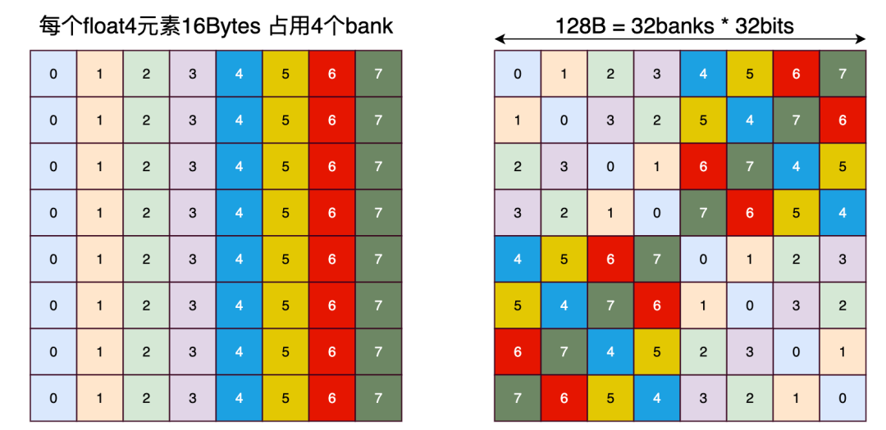
따라서 hardware implementation에서 매우 simple하고 fast한 Swizzle function을 구성해 위 Layout을 표현해야 한다. cutlass swizzle.hpp[11]에는 이러한 algorithm이 설명되어 있으며, function은 Swizzle<BBits, MBase, SShift>로 표현된다. concrete algorithm은 다음과 같다.
// A generic Swizzle functor
/* 0bxxxxxxxxxxxxxxxYYYxxxxxxxZZZxxxx
* ^--^ MBase is the number of least-sig bits to keep constant
* ^-^ ^-^ BBits is the number of bits in the mask
* ^---------^ SShift is the distance to shift the YYY mask
* (pos shifts YYY to the right, neg shifts YYY to the left)
*
* e.g. Given
* 0bxxxxxxxxxxxxxxxxYYxxxxxxxxxZZxxx
* the result is
* 0bxxxxxxxxxxxxxxxxYYxxxxxxxxxAAxxx where AA = ZZ xor YY
*/
MBase: num_base. 전체 lowest address의 몇 bit를 unchanged로 유지할지 나타낸다. Hopper에서는 TMA operation granularity가 16Bytes이므로 Mbase = 4이다.BBits: num_bits. operation에 참여하는 high bits YYY와 low bits ZZZ의 bit width가 몇 bits인지 나타낸다.SShift: num_shift. high bits와 low bits 사이의 interval이 몇 bits인지 나타낸다.
operation은 XOR를 사용한다. 한편으로 bit operation은 hardware에 매우 efficient하고, 다른 한편으로는 계산이 reversible하다는 좋은 특성이 있다. 예를 들어 YYYY=1111, ZZZZ=1011, AAAA = ZZZZ XOR YYYY = 0100이라고 하자. 생성된 Swizzle address를 inverse하면, 즉 YYYY XOR AAAA = 1011 = ZZZZ가 되어 원래 address를 simple하게 recover할 수 있다.
Swizzle<3, 4, 3>을 예로 들면 다음과 같다.
Swizzle<3,4,3> =>
num_bits = 3
num_base = 4
num_shft = 3
//bit_msk = (1 << num_bits)-1
bit_msk = (0b00000000_00000001 << 3) - 1 = 0b00000000_00000111
//yyy_msk = bit_msk << (num_base + max(0,num_shft))
yyy_msk = 0b00000000_00000111 << (4 + 3) = 0b00000011_10000000
// return offset ^ shiftr(input_number & yyy_msk{}, num_shft{})
// for example, take input_number = 0b00000011_11111111 = 1023
//input_number & yyy_msk
0b00000011_11111111 & 0b00000011_10000000 = 0b00000011_10000000
// (input_number & yyy_msk) >> num_shft
0b00000011_10000000 >> 3 = 0b00000000_01110000
// return value = input_number ^ ((input_number & yyy_msk) >> num_shft)
0b00000011_11111111 ^ 0b00000000_01110000 = 0b00000011_10001111 = 911
# inverse operation SMEM->GMEM offset
input_number = 0b00000011_10001111 = 911
// input_number & yyy_msk
0b00000011_10001111 & 0b00000011_10000000 = 0b00000011_10000000
// (input_number & yyy_msk) >> num_shft
0b00000011_10000000 >> 3 = 0b00000000_01110000
// return value = input_number ^ ((input_number & yyy_msk) >> num_shft)
0b00000011_10001111 ^ 0b00000000_01110000 = 0b00000011_11111111 = 1023
Hopper에서는 다음 몇 가지 Swizzle mode를 지원한다.
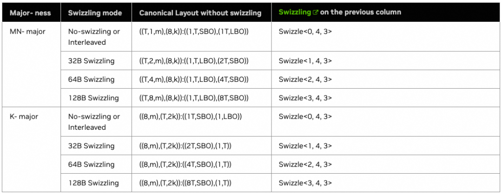
여기서 관련 Layout parameter는 다음과 같다.
T= 128 / sizeof-elements-in-bits: 128 bits(16B)를 unit으로 하는 element 수를 나타낸다.m: 같은 row에 반복 pattern이 몇 개 있는지 나타낸다.k: 같은 column에 반복 pattern이 몇 개 있는지 나타낸다.LBO(leading dimension byte offset): K dimension에서 인접한 두 core matrix 사이의 byte distance.SBO(stride dimension byte offset): M 또는 N dimension에서 인접한 두 core matrix 사이의 byte distance.
TMA의 경우 Tensor Descriptor를 구성할 때 parameter 중 하나가 Swizzle이다. TensorCore에서는 64bits register value 하나를 통해 matrix descriptor를 구성할 수 있고, SMEM에서 matrix multiply-add operation에 참여하는 matrix의 attribute를 지정하는 데 사용된다. 그 안에는 swizzle mode에 대한 description이 포함된다.
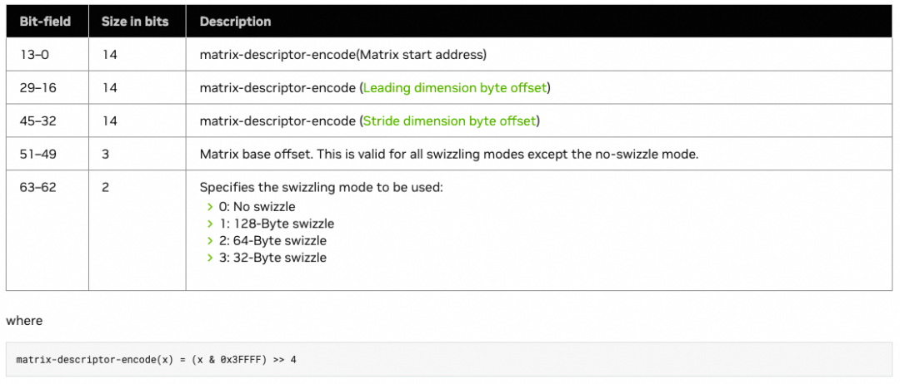
Hopper에서 Swizzle을 설정하는 방법은 다음과 같다. 예를 들어 TMA와 WGMMA operation을 준비하기 전, 다음과 같이 sem_layout이 필요하다.
import torch
import cutlass
import cutlass.cute as cute
import cutlass.utils as utils
import cutlass.utils.hopper_helpers as sm90_utils
from cutlass.cute.runtime import from_dlpack
@cute.jit
def swizzle_test(
A : cute.Tensor,
):
tile_shape_mn = (16,64)
a_dtype = A.element_type
a_layout = utils.LayoutEnum.from_tensor(A)
a_smem_layout_atom = cute.nvgpu.warpgroup.make_smem_layout_atom(
kind=sm90_utils.get_smem_layout_atom(
a_layout,
a_dtype,
major_mode_size=tile_shape_mn[0],
),
element_type=a_dtype
)
cute.printf("smem layout atom{}",a_smem_layout_atom)
a_smem_layout = cute.tile_to_shape(
atom = a_smem_layout_atom,
trg_shape=tile_shape_mn,
order=(0,1)
)
cute.printf("smem layout {}",a_smem_layout)
M,N = 4096, 4096
a = torch.arange(0.0, M *N, device="cuda", dtype=torch.bfloat16).reshape(N,M)
_a = from_dlpack(a, assumed_align=16)
swizzle_test(_a)
# output
smem layout atomS<1,4,3> o 0 o (8,16):(16,1)
smem layout S<1,4,3> o 0 o ((8,2),(16,4)):((16,128),(1,256))
sm90_utils.get_smem_layout_atom에서는 major_mode_size에 따라 majaor_mode_bits를 계산하고, continuity requirement에 따라 Swizzle Mode를 return한다.
def get_smem_layout_atom(
layout: LayoutEnum,
element_type: Type[Numeric],
major_mode_size: int,
*,
loc=None,
ip=None,
):
assert major_mode_size % 8 == 0
sw128_num_contiguous_bits = 1024
sw64_num_contiguous_bits = 512
sw32_num_contiguous_bits = 256
major_mode_size_bits = major_mode_size * element_type.width
if layout.sm90_mma_major_mode() == OperandMajorMode.MN:
if major_mode_size_bits % sw128_num_contiguous_bits == 0:
return cute.nvgpu.warpgroup.SmemLayoutAtomKind.MN_SW128
if major_mode_size_bits % sw64_num_contiguous_bits == 0:
return cute.nvgpu.warpgroup.SmemLayoutAtomKind.MN_SW64
if major_mode_size_bits % sw32_num_contiguous_bits == 0:
return cute.nvgpu.warpgroup.SmemLayoutAtomKind.MN_SW32
return cute.nvgpu.warpgroup.SmemLayoutAtomKind.MN_INTER
if major_mode_size_bits % sw128_num_contiguous_bits == 0:
return cute.nvgpu.warpgroup.SmemLayoutAtomKind.K_SW128
if major_mode_size_bits % sw64_num_contiguous_bits == 0:
return cute.nvgpu.warpgroup.SmemLayoutAtomKind.K_SW64
if major_mode_size_bits % sw32_num_contiguous_bits == 0:
return cute.nvgpu.warpgroup.SmemLayoutAtomKind.K_SW32
return cute.nvgpu.warpgroup.SmemLayoutAtomKind.K_INTER
make_smem_layout_atom에서는 해당 swizzle이 생성된다.
@dsl_user_op
def make_smem_layout_atom(
kind: SmemLayoutAtomKind, element_type: Type[Numeric], *, loc=None, ip=None
) -> core.ComposedLayout:
"""
Makes a SMEM layout Atom.
This function creates a composed layout in unit of elements consistent with the requested layout
Atom kind and element data type.
:param kind: The kind of layout Atom
:type kind: SmemLayoutAtomKind
:param element_type: The element data type to construct the layout for
:type element_type: Type[Numeric]
:return: The SMEM layout atom
:rtype: core.ComposedLayout
"""
if not isinstance(element_type, NumericMeta):
raise TypeError(f"element_type must be a Numeric, but got {element_type}")
if kind in (SmemLayoutAtomKind.MN_INTER, SmemLayoutAtomKind.K_INTER):
num_contiguous_bits = 128
sw = core.make_swizzle(0, 4, 3)
elif kind in (SmemLayoutAtomKind.MN_SW32, SmemLayoutAtomKind.K_SW32):
num_contiguous_bits = 256
sw = core.make_swizzle(1, 4, 3)
elif kind in (SmemLayoutAtomKind.MN_SW64, SmemLayoutAtomKind.K_SW64):
num_contiguous_bits = 512
sw = core.make_swizzle(2, 4, 3)
elif kind in (SmemLayoutAtomKind.MN_SW128, SmemLayoutAtomKind.K_SW128):
num_contiguous_bits = 1024
sw = core.make_swizzle(3, 4, 3)
else:
raise ValueError("unrecognized SMEM layout atom kind")
num_contiguous_elems = num_contiguous_bits // element_type.width
if kind in (
SmemLayoutAtomKind.MN_INTER,
SmemLayoutAtomKind.MN_SW32,
SmemLayoutAtomKind.MN_SW64,
SmemLayoutAtomKind.MN_SW128,
):
# M/N-major layout
return core.make_composed_layout(
sw,
0,
core.make_layout(
(num_contiguous_elems, 8), stride=(1, num_contiguous_elems)
),
loc=loc,
ip=ip,
)
else:
# K-major layout
return core.make_composed_layout(
sw,
0,
core.make_layout(
(8, num_contiguous_elems), stride=(num_contiguous_elems, 1)
),
loc=loc,
ip=ip,
)
2.3.3 CuteDSL WGMMA¶
아래에서는 CuteDSL의 WGMMA operation을 설명한다. 전체 example을 simple하게 유지하기 위해, data가 이미 TMA에 의해 SMEM에 배치되었다고 가정하고 WGMMA를 직접 호출해 operation을 수행한다. 이 code는 Epilogue 처리와 data write-back을 포함하지 않고, 복잡한 Consumer/Producer interaction도 포함하지 않는다(다음 절에서 자세히 펼친다). 여기서는 WGMMA에 필요한 SMEM Descriptor, tiled\_mma를 어떻게 구성하는지, 그리고 해당 Layout 관련 내용을 simple하게 분석한다. complete example은 3장에서 자세히 분석한다.
CuteDSL에서 WGMMA를 호출하려면 많은 data structure를 미리 준비해야 한다. 예를 들면 Tiled_MMA object, 해당 Layout, SMEM descriptor 등의 정보이다. 아래 그림과 같다.
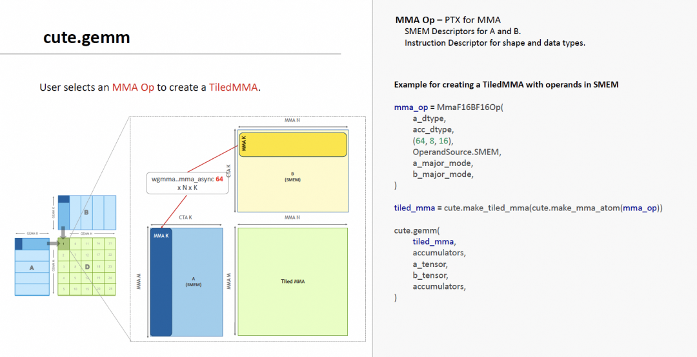
먼저 Host-side function과 data preparation을 보자. Tiled_MMA object를 생성해야 하고, operand datatype, Tiler shape 등을 알아야 한다. CuteDSL에는 Hopper를 대상으로 make\_trivial\_tiled\_mma[12] function이 있어 tiled\_mma를 구성한다.
import torch
import cutlass
import cutlass.cute as cute
import cutlass.torch as cutlass_torch
import cutlass.utils as utils
import cutlass.utils.hopper_helpers as sm90_utils
from cutlass.cute.runtime import from_dlpack
@cute.jit
def launch_gemm(
a : cute.Tensor,
b : cute.Tensor,
c : cute.Tensor,
):
tile_shape_mnk = (128,128,64)
# get Tensor datatype
a_dtype = a.element_type
b_dtype = b.element_type
c_dtype = c.element_type
a_layout = utils.LayoutEnum.from_tensor(a)
b_layout = utils.LayoutEnum.from_tensor(b)
c_layout = utils.LayoutEnum.from_tensor(c)
# create tiled_mma object
tiled_mma = sm90_utils.make_trivial_tiled_mma(
a_dtype,
b_dtype,
a_layout.sm90_mma_major_mode(),
b_layout.sm90_mma_major_mode(),
c_dtype,
atom_layout_mnk=(1, 1, 1),
tiler_mn=(64, tile_shape_mnk[1]),
)
이 function 내부에서는 A operand가 default로 SHMEM 안의 OperandSource.SMEM에 있다. 그다음 A와 B의 dataType에 따라 MMA_OP를 선택한다. 예를 들어 FP16일 때는 MmaF16BF16Op를 선택한다. 마지막으로 MMA_OP를 통해 MMA_ATOM을 생성하고 Tiled_MMA object를 생성한다.
def make_trivial_tiled_mma(
a_dtype: Type[Numeric],
b_dtype: Type[Numeric],
a_leading_mode: OperandMajorMode,
b_leading_mode: OperandMajorMode,
acc_dtype: Type[Numeric],
atom_layout_mnk: Tuple[int, int, int],
tiler_mn: Tuple[int, int],
a_source: OperandSource = OperandSource.SMEM,
*
) -> cute.TiledMma:
if a_dtype in {Float16, BFloat16}:
mma_op = MmaF16BF16Op(
a_dtype,
acc_dtype,
(*tiler_mn, 16),
a_source,
a_leading_mode,
b_leading_mode,
)
elif a_dtype in {Float8E4M3FN, Float8E5M2} and b_dtype in {
Float8E4M3FN,
Float8E5M2,
}:
mma_op = MmaF8Op(
a_dtype,
b_dtype,
acc_dtype,
(*tiler_mn, 32),
a_source,
a_leading_mode,
b_leading_mode,
)
else:
raise TypeError(f"unsupported a_dtype and b_dtype, got {a_dtype} and {b_dtype}")
return cute.make_tiled_mma(cute.make_mma_atom(mma_op), atom_layout_mnk)
하지만 cute.gemm operation에는 A/B와 Accumulator C의 Layout도 필요하다. Host function에서는 다음 방식으로 구성하며, 이때 Swizzle 관련 attribute가 함께 carry된다.
a_smem_shape = cute.slice_(tile_shape_mnk, (None, 0, None))
a_is_k_major = (
a_layout.sm90_mma_major_mode() == cute.nvgpu.warpgroup.OperandMajorMode.K
)
a_major_mode_size = tile_shape_mnk[2 if a_is_k_major else 0]
a_smem_layout_atom = cute.nvgpu.warpgroup.make_smem_layout_atom(
kind=sm90_utils.get_smem_layout_atom(
a_layout,
a_dtype,
a_major_mode_size,
),
element_type=a_dtype,
)
a_smem_layout = cute.tile_to_shape(
atom = a_smem_layout_atom,
trg_shape=(tile_shape_mnk[0], tile_shape_mnk[2]),
order=(0,1) if a_is_k_major else (1,0)
)
print(f"a smem layout {a_smem_layout} inner {a_smem_layout.inner} outer {a_smem_layout.outer}")
b_smem_shape = cute.slice_(tile_shape_mnk, (0, None, None))
b_is_k_major = (
b_layout.sm90_mma_major_mode() == cute.nvgpu.warpgroup.OperandMajorMode.K
)
b_major_mode_size = tile_shape_mnk[2 if b_is_k_major else 1]
b_smem_layout_atom = cute.nvgpu.warpgroup.make_smem_layout_atom(
kind=sm90_utils.get_smem_layout_atom(
b_layout,
b_dtype,
b_major_mode_size,
),
element_type=b_dtype,
)
b_smem_layout = cute.tile_to_shape(
atom = b_smem_layout_atom,
trg_shape=(tile_shape_mnk[0], tile_shape_mnk[2]),
order=(0, 1) if b_is_k_major else (1, 0),
)
print(f"b smem layout {b_smem_layout} inner {b_smem_layout.inner} outer {b_smem_layout.outer}")
c_smem_shape = cute.slice_(tile_shape_mnk, (None, None, 0))
c_major_mode_size = tile_shape_mnk[1 if c_layout.is_n_major_c() else 0]
c_smem_layout_atom = cute.nvgpu.warpgroup.make_smem_layout_atom(
kind=sm90_utils.get_smem_layout_atom(
c_layout,
c_dtype,
c_major_mode_size,
),
element_type=c_dtype,
)
c_smem_layout = cute.tile_to_shape(
atom = c_smem_layout_atom,
trg_shape=(tile_shape_mnk[0], tile_shape_mnk[1]),
order=(0, 1) if c_layout.is_n_major_c() else (1, 0),
)
print(f"c smem layout {c_smem_layout} inner {c_smem_layout.inner} outer {c_smem_layout.outer}")
#output
a smem layout S<3,4,3> o 0 o ((8,16),(64,1)):((64,512),(1,0)) inner S<3,4,3> outer ((8,16),(64,1)):((64,512),(1,0))
b smem layout S<3,4,3> o 0 o ((8,16),(64,1)):((64,512),(1,0)) inner S<3,4,3> outer ((8,16),(64,1)):((64,512),(1,0))
c smem layout S<3,4,3> o 0 o ((8,16),(32,4)):((32,256),(1,4096)) inner S<3,4,3> outer ((8,16),(32,4)):((32,256),(1,4096))
마지막으로 smem memory usage를 계산하고 SMEM data struct를 구성한 뒤 Kernel을 launch한다.
smem_size = (cute.size_in_bytes(cutlass.BFloat16, a_smem_layout) +
cute.size_in_bytes(cutlass.BFloat16, b_smem_layout) +
cute.size_in_bytes(cutlass.Float32, c_smem_layout))
buffer_align_bytes = 1024
@cute.struct
class SharedStorage:
sA: cute.struct.Align[
cute.struct.MemRange[
a_dtype, cute.cosize(a_smem_layout)
],
buffer_align_bytes,
]
sB: cute.struct.Align[
cute.struct.MemRange[
b_dtype, cute.cosize(b_smem_layout)
],
buffer_align_bytes,
]
gemm_kernel(
a_smem_layout,
b_smem_layout,
c_smem_layout,
tile_shape_mnk,
tiled_mma,
SharedStorage
).launch(
grid=(1, 1, 1),
block=(128, 1, 1),
smem=smem_size
)
Kernel function에는 SHMEM 안의 A/B/C layout, Tiled_MMA, SMEM storage struct, 그리고 Tile Shape을 pass한다. 먼저 SMEM 안에 struct를 allocate하고, layout의 swizzle definition에 따라 Tensor를 얻는다.
@cute.kernel
def gemm_kernel(
a_smem_layout: cute.ComposedLayout,
b_smem_layout: cute.ComposedLayout,
c_smem_layout: cute.ComposedLayout,
tile_shape_mnk: tuple [int,int,int],
tiled_mma: cute.TiledMma,
SharedStorage: cutlass.Constexpr
):
acc_type = cutlass.Float32
tidx, _, _ = cute.arch.thread_idx()
smem = cutlass.utils.SmemAllocator()
storage = smem.allocate(SharedStorage)
sA = storage.sA.get_tensor(
a_smem_layout.outer, swizzle = a_smem_layout.inner
)
sB = storage.sB.get_tensor(
b_smem_layout.outer, swizzle = c_smem_layout.inner
)
sC_ptr = cute.recast_ptr(
sA.iterator, c_smem_layout.inner, dtype=acc_type
)
sC = cute.make_tensor(sC_ptr, c_smem_layout.outer)
그다음 각 thread에 대해 fragment를 구성한다.
thr_mma = tiled_mma.get_slice(tidx)
tCsA = thr_mma.partition_A(sA)
tCsB = thr_mma.partition_B(sB)
tCgC = thr_mma.partition_C(sC)
tCrA = thr_mma.make_fragment_A(tCsA)
tCrB = thr_mma.make_fragment_B(tCsB)
accumulator = cute.make_fragment(tCgC.shape, acc_type)
마지막으로 cute.gemm을 execute한다. 보통 execute 전에 warpgroup fence가 필요하며, data가 모두 load 완료되었음을 보장해야 한다는 점에 주의하자. 그다음 instruction issue 후 commit\_group이 필요하고, wait\_group(N)으로 completion을 기다려야 한다.
cute.nvgpu.warpgroup.fence()
cute.gemm(tiled_mma, accumulator, tCrA, tCrB, accumulator)
if tidx == 0 :
cute.printf("WGMMA Issued")
cute.nvgpu.warpgroup.commit_group()
cute.nvgpu.warpgroup.wait_group(0)
if tidx == 0 :
cute.printf("WGMMA Finished")
2.4 CuteDSL asynchronous programming¶
다음 step은 TMA와 TensorCore WGMMA라는 두 asynchronous call을 함께 coordinate하는 것이다. 아래 그림과 같다.
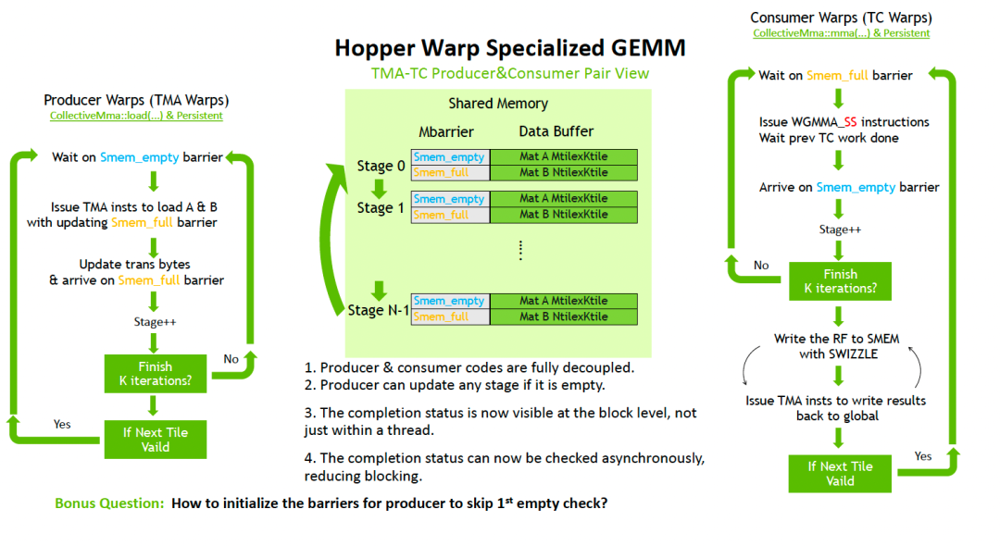
그다음 SMEM을 multi-stage pipeline으로 나눈다. 각 pipeline stage에는 smem_empty와 smem_full이라는 두 semaphore가 있다. 사실 smem_full이라는 표현은 오해를 부르기 쉽다. 최근 cuteDSL document에서는 이를 smem_ready로 바꾼 것으로 보이는데, 이것도 괜찮다.
하지만 interaction process는 여전히 매우 복잡하고, 제대로 처리하지 않으면 Kernel이 hang되는 문제가 쉽게 발생한다. CuteDSL은 전체 interaction process를 pipeline[13]으로 encapsulate했다. 이 절에서는 이를 자세히 펼쳐 본다.
이 framework는 classic Producer-Consumer model을 기반으로 한다.
- Producer: 보통 low-speed Global Memory에서 data를 load하는 asynchronous operation을 담당한다. modern NVIDIA GPU에서는
cp.asyncinstruction(PipelineCpAsync사용)일 수 있고, 더 efficient한 tensor memory accelerator TMA(PipelineTmaAsync사용)일 수도 있다. - Consumer: 보통 computation task를 execute하는 thread이다. 예를 들어 matrix multiplication(MMA)을 execute하는 Warp이다.
- Buffer: high-speed shared memory(SMEM)에 위치한 area이며, producer와 consumer 사이의 data exchange에 사용된다.
먼저 이 code는 PipelineAsync base class를 정의한다. 그다음 cp.async asynchronous scenario를 대상으로 PipelineCpAsync를 정의하고, TMA asynchronous memory access scenario를 대상으로 PipelineTmaAsync와 PipelineTmaMultiConsumersAsync를 정의한다. 후자는 multiple Consumer가 computation과 memory access latency를 더 잘 overlap할 수 있게 지원하지만, code를 보면 blackwell용인 것 같은데 왜 SM_90 file 안에 있는지는 모르겠다. 마지막으로 epilogue에 사용할 PipelineTmaStore class도 정의한다.
2.4.1 PipelineAsync¶
PipelineAsync는 generic pipeline class이며, producer와 consumer가 모두 asynchronous thread이다. 또한 다른 specialized pipeline class의 base class 역할도 한다. 이 class 안에는 smem_full과 smem_empty라는 두 Mbarrier state machine이 정의되어 있다.
| barrier | state | p.acquire | p.commit | c.wait | c.release |
|---|---|---|---|---|---|
| empty_bar | empty | n/a | n/a | - | |
| empty_bar | wait | n/a | n/a | -> empty | |
| full_bar | wait | n/a | -> full | n/a | |
| full_bar | full | n/a | - | n/a |
이 table은 dual-barrier synchronization mechanism을 명확히 설명한다.
empty_bar: producer에게 "buffer가 비었으니 write할 수 있다"고 알리는 데 사용된다.full_bar: consumer에게 "buffer가 찼으니 read할 수 있다"고 알리는 데 사용된다.
Workflow:¶
-
Producer:
-
call
acquire(): wait on empty_bar. If the buffer is empty(emptystate), the call returns immediately. If the consumer has not released it yet(waitstate), the producer blocks. - (producer performs write operation)
-
call
commit(): send anarrivesignal on full_bar, change its state tofull, and notify the consumer that data is ready. -
Consumer:
-
call
wait(): wait on full_bar. If data is ready(fullstate), the call returns immediately. If the producer has not committed it yet(waitstate), the consumer blocks. - (consumer performs read operation)
- call
release(): send anarrivesignal on empty_bar, change its state back toempty, and notify the producer that this buffer can be reused.
이런 Mbarrier pair는 circular buffer의 Slot 안에 배치된다. mbarrier는 Hopper architecture가 도입한 key synchronization primitive이다. 이는 shared memory 안에 저장되는 object이며, 기존 barrier.sync 같은 synchronization 방식과 비교해 더 flexible한 synchronization mode를 제공한다. concrete operation flow는 앞 절에서 이미 자세히 소개했다.
여기서:
X: empty buffer (initial state)W: producer is writing (producer waits for buffer to become empty)D: data ready (producer has written data into buffer)R: consumer is reading (consumer is consuming data in buffer)
circular buffer로 design하는 이유는 global memory에서 shared memory로 data를 load하는 수백 clock cycle의 latency 등을 hide하기 위해 Kernel을 pipeline 형태로 구성하기 때문이다. N개 stage(num_stages)가 있다고 가정하면, shared memory 안에 N개 buffer를 allocate했다는 뜻이다. * 시각 t에서 consumer(compute unit)는 k번째 buffer의 data를 처리하고 있다. * 동시에 producer(memory load unit)는 asynchronous하게 data를 k+1번째 buffer로 load할 수 있다. * consumer가 k번째 buffer의 work를 완료하면, data가 이미 ready되어 있으므로 즉시 k+1번째 buffer의 data를 처리하기 시작할 수 있다.
이 방식은 computation과 data load가 parallel하게 execute될 수 있게 하여 SM throughput을 높인다.
그 key member method는 다음과 같다.
sync_object_full,sync_object_empty: 이 둘은 core synchronization object이다. 보통MbarrierArrayinstance이며, 각각N개 stage의 "smem_full" Mbarrier와 "smem_empty" Mbarrier를 관리한다.num_stages: pipeline depth.producer_mask,consumer_mask: multi-CTA cooperation 시 어떤 CTA가arrivesignal에 참여하거나 receive해야 하는지 지정하는 데 사용되며, 보통 CGA-scope synchronization에 사용된다.create(): static factory method로,PipelineAsyncinstance를 생성하고 initialize하는 데 사용된다. 전달된 parameter에 따라sync_object_full과sync_object_empty를 생성한다.barrier_storage.align(min_align=8)이 shared memory 안에서mbarrierobject의 8-byte alignment를 보장한다는 점에 주의하자. 이는 hardware requirement이다.producer_acquire()/producer_commit(): producer의 "empty buffer 획득"과 "full buffer submit" logic을 구현한다.consumer_wait()/consumer_release(): consumer의 "full buffer 대기"와 "empty buffer release" logic을 구현한다.producer_tail(): 중요한 tail function이다. producer loop가 끝난 뒤 호출되어 모든 pipeline stage가 올바르게 synchronized되었음을 보장한다. 마지막으로 사용된 buffer까지 advance하고 그 buffer에acquireoperation을 수행함으로써, consumer가 모든 remaining work를 완료하기를 기다린다. 이는 kernel exit 후에도 danglingmbarriersignal이 남아 state inconsistency가 발생하는 것을 방지한다.make_producer()/make_consumer(): user-friendly한PipelineProducer와PipelineConsumerobject를 생성해 API call을 단순화한다.
여기서 make_producer() / make_consumer()를 조금 더 펼쳐 보자. 이 두 encapsulation이 없다면 internal state가 직접 노출된다. 아래와 같이 user는 PipelineAsync object와 직접 interact해야 하며, code는 아마 다음과 같을 것이다.
# pseudocode without interface class
pipeline = PipelineAsync.create(...)
producer_state = make_pipeline_state(PipelineUserType.Producer, num_stages)
consumer_state = make_pipeline_state(PipelineUserType.Consumer, num_stages)
# producer loop
for i in range(...):
pipeline.producer_acquire(producer_state) # wait
# write data into buffer pointed to by producer_state.index
pipeline.producer_commit(producer_state) # commit
producer_state.advance() # manually advance state
# consumer loop
for i in range(...):
pipeline.consumer_wait(consumer_state) # wait
# read data from buffer pointed to by consumer_state.index
pipeline.consumer_release(consumer_state) # release
consumer_state.advance() # manually advance state
이 방식에는 몇 가지 심각한 문제가 있다.
- State management exposure: user가
producer_state와consumer_state를 수동으로 생성, 전달, update해야 한다. 이는 매우 번거롭고 error-prone하다. - Non-intuitive API:
pipeline.producer_acquire(state)call 방식은producer.acquire()만큼 직관적이지 않다. - Poor safety: 복잡한 loop나 conditional logic에서 이미
advance된 state에 대해 실수로commit하거나,advance를 잊어 deadlock 또는 data race를 유발하기 쉽다.
PipelineProducer와 PipelineConsumer class의 목적은 위 모든 문제를 해결하는 것이다.
PipelineAsync및 그 subclass: pipeline이 어떻게 작동하는지에 집중한다. 이들은 low-level synchronization engine이며,mbarrier, TMA transaction, cross-CTA signaling 같은 complex mechanism을 처리한다.PipelineProducer/Consumer: pipeline을 어떻게 사용하는지에 집중한다. final user에게 role-based, state-independent simple interface를 제공한다.
PipelineProducer는 producer role을 나타낸다. 하나의 PipelineProducer instance는 세 가지 key private member를 가진다.
__pipeline: PipelineAsync: underlying pipeline engine에 대한 reference. 모든 actual synchronization operation은 이 object에 delegate된다.__state: PipelineState: mutable state object. 이는PipelineProducer의 core이며, producer가 next time operation할 buffer index(index)와 synchronization phase(phase)를 track한다.advance()가 호출될 때마다 이__stateobject 내부의 value가 update된다.__group: CooperativeGroup: production operation에 참여하는 thread group을 identify한다.
producer의 standard workflow는 Acquire -> (Produce Data) -> Commit -> Advance이다.
acquire() -> ImmutableResourceHandle:¶
self.__pipeline.producer_acquire(self.__state, ...)를 호출해 blocking wait를 수행한다. 이는__state가 가리키는 buffer가 empty가 되기를 기다린다(즉 이전 loop의 consumer가 이미 release했음을 의미).- wait가 성공하면
self.__state.clone()을 호출해 current state의 read-only snapshot을 생성한다. - 그다음 이 snapshot과
__pipelineobject reference를ImmutableResourceHandle로 wrap하여 return한다.
Role: acquire는 resource를 획득하는 action이다. 반환된 handle은 이 특정 buffer에 대한 usage right를 가지고 있음을 증명한다.
advance():¶
self.__state.advance()를 호출한다.- 이는
__state내부의index와phase를 update하여 circular buffer의 next stage를 가리키게 한다.
Role: 이 method는 PipelineProducer object 자체의 internal state를 변경한다. 다음 acquire를 준비한다.
acquire_and_advance() -> ImmutableResourceHandle:¶
acquire()와advance()를 simple하게 merge한다.- 먼저
acquire()를 호출해 current stage의handle을 얻는다. - 그다음 즉시
advance()를 호출해 producer의 internal state를 next stage로 advance한다.
Role: 이는 가장 자주 쓰이는 pattern이다. producer가 stage k의 buffer를 얻은 뒤 곧바로 stage k+1을 얻을 준비를 할 수 있다. state를 미리 advance하면 code logic을 더 잘 organize할 수 있다.
commit(handle: Optional[ImmutableResourceHandle] = None):¶
handle이 전달되면handle.commit()을 호출한다. 이것이 recommended usage이다.handle이None이면self.__state를 직접 사용해 commit한다:self.__pipeline.producer_commit(self.__state).
Role: 이 method는 producer가 buffer에 대한 data write를 완료했음을 pipeline에 notify한다.
Note: ImmutableResourceHandle internal class는 design의 core이며, 매우 중요한 safety를 제공한다. producer.acquire_and_advance()가 호출되면 producer object 자체의 __state는 이미 next stage(예: k+1)를 가리키지만, 반환된 handle 내부의 __immutable_state는 여전히 current stage(stage k)를 가리킨다.
이후 producer thread가 data load 등의 operation을 execute하고, 완료되면 handle.commit()을 호출한다. 이 call은 handle 내부에 저장된 immutable state, 즉 stage k를 가리키는 state를 사용한다. 이것이 다음을 보장한다.
- commit하는 것은 항상 처음 acquire한 stage이다.
producerobject state change 때문에 잘못된 stage(예: 아직 data를 write하지 않은 stagek+1)를 accidently commit하지 않는다.
example code:
producer = pipeline.make_producer()
# iteration 0
handle_k0 = producer.acquire_and_advance() # producer.__state -> 1, handle_k0.__state -> 0
# ... (write data into buffer 0)
handle_k0.commit() # correctly issue commit signal on pipeline stage 0
# iteration 1
handle_k1 = producer.acquire_and_advance() # producer.__state -> 2, handle_k1.__state -> 1
# ... (write data into buffer 1)
handle_k1.commit() # correctly issue commit signal on pipeline stage 1
PipelineConsumer also contains __pipeline, __state, and __group. 여기서 __state는 consumer가 다음에 consume할 buffer를 track한다.
consumer의 standard workflow는 Wait -> (Consume Data) -> Release -> Advance이다.
wait() -> ImmutableResourceHandle:¶
self.__pipeline.consumer_wait(self.__state, ...)를 호출해 blocking wait를 수행한다. 이는__state가 가리키는 buffer가 full이 되기를 기다린다(즉 producer가 이미 commit했음을 의미).- producer와 마찬가지로 wait가 성공하면
__state의 read-only snapshot을 생성한다. - 이 snapshot을 포함한
ImmutableResourceHandle을 return한다.
Role: wait는 data ready를 기다리는 action이다. 반환된 handle은 채워진 data buffer에 대한 read right를 얻었음을 증명한다.
advance():¶
- producer와 마찬가지로
self.__state.advance()를 호출해 consumer의 internal state를 next stage로 advance한다.
Role: 다음 wait를 준비한다.
wait_and_advance() -> ImmutableResourceHandle:¶
wait()와advance()를 merge한다.
Role: 이는 consumer loop에서 가장 자주 쓰이는 method이다.
release(handle: Optional[ImmutableResourceHandle] = None):¶
handle이 전달되면handle.release()를 호출한다. 이것이 recommended usage이다.handle.release()내부에서는self.get_origin().consumer_release(...)를 호출하며,handle내부에 저장된 immutable state를 사용한다.
Role: 이 method는 consumer가 buffer data read를 완료했으며, 해당 buffer가 이제 "empty"이고 producer가 다시 사용할 수 있음을 pipeline에 notify한다.
PipelineCpAsync class implementation은 Base class와 거의 유사하므로 여기서는 생략한다.
2.4.2 PipelineTmaAsync¶
이어서 Hopper에서 가장 자주 쓰이는 PipelineTmaAsync class를 자세히 분석한다. 아래 그림과 같다.
이는 Hopper architecture의 TMA를 위해 design된 pipeline이다. producer는 TMA Load operation이다. 이 class는 TMA working method에 맞추기 위해 significant change를 도입했다.
producer_acquire():¶
이 method는 base class와 본질적으로 다르다. empty_bar에서 wait()할 뿐 아니라 즉시 full_bar에서 arrive()도 수행한다. 이는 TMA synchronization model이 transaction-based이기 때문이다. 여기서 full_bar는 transaction barrier로 configure된다. arrive() operation으로 이 transaction을 initialize하고 expected byte count(tx_bytes)를 설정한다. 그다음 tma_load instruction을 issue한다. TMA hardware는 asynchronous하게 load를 execute할 때 이 mbarrier에 대해 자동으로 "arrive" operation을 수행하고 actual tx_bytes를 점진적으로 증가시킨다.
producer_commit():¶
이 method는 pass(empty operation)이다. 실제 "commit" action, 즉 TMA data load는 tma_load instruction에 의해 asynchronous하게 trigger되기 때문이다. producer_acquire를 호출한 뒤에는 다른 task를 계속 execute할 수 있고, 다시 synchronous commit을 수행할 필요가 없다.
init_empty_barrier_arrive_signal()¶
이는 CGA 전용이다. 하나의 Cluster 안에서 여러 CTA가 큰 GEMM을 협력 처리할 때, 하나의 CTA(producer)가 computation을 완료한 뒤 다른 CTA(consumer)에게 어떤 global memory region을 사용할 수 있음을 notify해야 한다. 이 function은 "buffer is empty" signal을 cross-CTA로 효율적으로 전달하기 위한 것이다. thread ID(tidx)와 cluster layout(cta_layout_vmnk)에 따라 thread 하나(is_signalling_thread)를 strategic하게 선택해 target CTA(dst_rank)에 arrive signal을 보낸다.
is_same_row_or_col check는 cluster 내부 communication topology를 활용하기 위한 것으로, 같은 row 또는 같은 column의 CTA를 우선 선택해 communication한다. 이들 사이에는 더 빠른 physical connection이 있을 수 있기 때문이다. 이는 모든 thread가 signal을 보내서 congestion을 유발하는 것을 피하고, signal이 올바르게 전달되도록 보장한다.
consumer_release():¶
이는 conditionally execute된다. init_empty_barrier_arrive_signal에 의해 선택된 "signaling thread"(is_signalling_thread)만 실제로 arrive operation을 execute하고, producer에게 buffer가 empty임을 notify한다.
2.4.3 PipelineTmaStore¶
Epilogue의 TMA Store operation을 synchronize하는 데 사용된다. 즉 computation result를 shared memory에서 global memory로 asynchronous write-back한다. 이는 producer(store를 execute하는 thread)만 있고 consumer는 없는 special pipeline이다.
- 이는
mbarrier를 사용하지 않고TmaStoreFenceobject를 사용한다. 이는 TMA Store 전용 synchronization primitive이다. producer_acquire(): wait하여 이전 TMA Store operation이 완료되었고 hardware resource를 사용할 수 있음을 보장한다.producer_commit(): arrive하여 새로운 TMA Store operation을 submit한다.producer_tail():sync_object_full.tail()을 호출한다. 이는 fence operation이며, kernel exit 전에 submit된 모든 TMA Store가 완료되었음을 보장해 data의 global visibility를 보장한다.
TMA와 결합해야 하므로, 자세한 usage code는 다음 장에서 소개한다.
2.5 Summary¶
좋다. 여기까지 이 장에서는 CGA, TMA, TensorCore와 서로 coordinate하는 Pipeline을 자세히 소개했다. 이제 필요한 조각이 모였으니 cuteDSL의 Hopper DenseGemm code를 하나로 연결해 분석할 수 있다.
3. Hopper DenseGemm¶
3.1 Host-side function¶
Host function에서는 주로 Kernel operation 시 먼저 WGMMA computation에 사용할 Tiled_MMA object를 생성해야 한다. 그다음 MMA instruction의 K length에 따라 tiled\_mn과 함께 tiled\_mnk를 계산한다. 이어서 SMEM memory capacity에 따라 pipeline stage count(ab_stage 및 epi_stage)를 계산하고, 마지막으로 Tile_A, Tile_B, Tile_Epilogue가 SMEM에서 갖는 layout을 생성한다. 이때 어떤 Swizzle을 사용할지 판단한다. 또한 TMA에 대해서는 TMA ATOM과 Tensor Descriptor를 생성해야 하며, CGA Layout에 따라 TMA multicast capability를 enable할지 고려해야 한다. 이어서 SMEM multi-stage pipeline management를 위해 SharedStorage struct를 생성한다. 마지막으로 CGA shape와 Tiled_mnk shape에 따라 kernel launch에 사용할 grid parameter를 계산하고, 최종적으로 kernel을 호출한다.
tiled\_mn의 shape에 따라 register spill을 피하기 위해 2개 WarpGroup execution이 필요한지 판단하고,atom\_layout\_mnkobject를 생성 및 분석한다.- Tensor A/B/C의 datatype 및 Majorness를 얻고 datatype을 statically validate한다.
- Tiled_MMA object를 생성한다.
-
self._setup_attributes()를 호출한다.
-
CTA Tile Shape를 check한다.
- Tiled-MMA object를 생성한다.
- MMA instruction의 Shape_k에 따라 tile_shape_mnk의 K dimension size를 update한다.
- cluster_shape_mn을 기반으로 CGA 안의 CTA Layout layout을 생성한다.
- CGA Layout을 기반으로 A/B가 TMA multicast를 해야 하는지 판단한다. 즉 is_a_mcast / is_b_mcast이다.
- epi_tile shape를 계산한다.
- SMEM capacity에 대해 pipeline stage count ab_stage와 epi_stage를 계산한다.
-
_make_smem_layouts function을 기반으로 A/B/C의 smem_layout을 얻는다.
-
tma_atom과 tma_tensor를 구성한다.
- tile_shape_mnk와 cluster_shape_mn을 기반으로 kernel launch에 사용할 grid를 계산한다.
- SharedStorage struct를 구성한다.
- Launch kernel
여기서 Tiled-MMA object 처리, tiled_k dimension 계산, CGA/Grid Layout은 2.1.2절에서 이미 자세히 소개했다. 아래에서는 주로 SMEM 관련 Layout computation에 집중한다.
먼저 SMEM capacity와 Tile_MNK에 따라 필요한 pipeline stage count를 estimate해야 한다. cuteDSL example에는 _compute_stages function이 정의되어 있으며, \(A,B\) operand와 마지막 Epilogue에 필요한 pipeline stage count를 계산해 return한다. concrete implementation logic은 다음과 같다.
@cute.jit
def tma_stage(
a : cute.Tensor,
b : cute.Tensor,
c : cute.Tensor,
):
tile_shape_mnk = (128,128,64)
# get Tensor datatype
a_dtype = a.element_type
b_dtype = b.element_type
c_dtype = c.element_type
# set fixed stage for Epilogue
epi_stage = 4
# C-related Epilogue operation reuses AB memory
epi_bytes = 0
# get SMEM capacity and define occupancy
smem_capacity = utils.get_smem_capacity_in_bytes("sm_90")
occupancy = 1
# get A/B Tile Shape and compute memory usage per pipeline stage
a_shape = cute.slice_(tile_shape_mnk, (None, 0, None))
b_shape = cute.slice_(tile_shape_mnk, (0, None, None))
ab_bytes_per_stage = (
cute.size(a_shape) * a_dtype.width // 8
+ cute.size(b_shape) * b_dtype.width // 8
)
# also consider space occupied by Mbarrier-related helper data structures
mbar_helpers_bytes = 1024
# AB stage count is as follows:
ab_stage = (
smem_capacity // occupancy - mbar_helpers_bytes - epi_bytes
) // ab_bytes_per_stage
cute.printf("ab_stage {} epi_stage {}",ab_stage, epi_stage)
M,N,K,L = 4096, 4096, 4097,16
a = torch.randn(L, M, K, device="cuda", dtype=torch.bfloat16).permute(1,2,0)
b = torch.randn(L, N, K, device="cuda", dtype=torch.bfloat16).permute(1,2,0)
c = torch.zeros(L, M, N, device="cuda", dtype=torch.float32).permute(1,2,0)
_a = from_dlpack(a, assumed_align=16)
_b = from_dlpack(b, assumed_align=16)
_c = from_dlpack(c, assumed_align=16)
tma_stage(_a,_b,_c)
#output
ab_stage 7 epi_stage 4
그다음 CGA shape를 판단해 TMA Multicast를 사용할지 결정해야 한다.
self.cta_layout_mnk = cute.make_layout((*self.cluster_shape_mn, 1))
self.num_mcast_ctas_a = self.cluster_shape_mn[1]
self.num_mcast_ctas_b = self.cluster_shape_mn[0]
self.is_a_mcast = self.num_mcast_ctas_a > 1
self.is_b_mcast = self.num_mcast_ctas_b > 1
SMEM Layout을 계산하기 전에 epilogue tile의 shape도 고려해야 한다. Tile이 커서 setting이 필요할 때, single WarpGroup operation은 RegisterSpill을 유발하므로 두 개 warp group이 operation을 수행해야 한다. epi_tile은 _sm90_compute_tile_shape_or_override function을 통해 처리하여 register usage를 control해야 한다.
is_cooperative = self.atom_layout_mnk == (2, 1, 1)
self.epi_tile = self._sm90_compute_tile_shape_or_override(
self.tile_shape_mnk, self.c_dtype, is_cooperative=is_cooperative
)
@staticmethod
def _sm90_compute_tile_shape_or_override(
tile_shape_mnk: tuple[int, int, int],
element_type: type[cutlass.Numeric],
is_cooperative: bool = False,
epi_tile_override: tuple[int, int] | None = None,
) -> tuple[int, int]:
if epi_tile_override is not None:
return epi_tile_override
if is_cooperative:
tile_m = min(128, cute.size(tile_shape_mnk, mode=[0]))
tile_n = min(32, cute.size(tile_shape_mnk, mode=[1]))
return (tile_m, tile_n)
else:
n_perf = 64 if element_type.width == 8 else 32
tile_m = min(64, cute.size(tile_shape_mnk, mode=[0]))
tile_n = min(n_perf, cute.size(tile_shape_mnk, mode=[1]))
return (tile_m, tile_n)
마지막으로 stage 수에 따라 smem 안에서 각 stage의 Layout을 계산한다. 즉 example의 _make\_smem\_layouts function을 호출해 a_smem_layout_staged, b_smem_layout_staged, epi_smem_layout_staged를 얻는다.
@staticmethod
def _make_smem_layouts(
tile_shape_mnk: tuple[int, int, int],
epi_tile: tuple[int, int],
a_dtype: type[cutlass.Numeric],
a_layout: utils.LayoutEnum,
b_dtype: type[cutlass.Numeric],
b_layout: utils.LayoutEnum,
ab_stage: int,
c_dtype: type[cutlass.Numeric],
c_layout: utils.LayoutEnum,
epi_stage: int,
) -> tuple[cute.ComposedLayout, cute.ComposedLayout, cute.ComposedLayout]:
a_smem_shape = cute.slice_(tile_shape_mnk, (None, 0, None))
a_is_k_major = (
a_layout.sm90_mma_major_mode() == cute.nvgpu.warpgroup.OperandMajorMode.K
)
b_is_k_major = (
b_layout.sm90_mma_major_mode() == cute.nvgpu.warpgroup.OperandMajorMode.K
)
a_major_mode_size = tile_shape_mnk[2 if a_is_k_major else 0]
a_smem_layout_atom = cute.nvgpu.warpgroup.make_smem_layout_atom(
sm90_utils.get_smem_layout_atom(
a_layout,
a_dtype,
a_major_mode_size,
),
a_dtype,
)
a_smem_layout_staged = cute.tile_to_shape(
a_smem_layout_atom,
cute.append(a_smem_shape, ab_stage),
order=(0, 1, 2) if a_is_k_major else (1, 0, 2),
)
b_smem_shape = cute.slice_(tile_shape_mnk, (0, None, None))
b_major_mode_size = tile_shape_mnk[2 if b_is_k_major else 1]
b_smem_layout_atom = cute.nvgpu.warpgroup.make_smem_layout_atom(
sm90_utils.get_smem_layout_atom(
b_layout,
b_dtype,
b_major_mode_size,
),
b_dtype,
)
b_smem_layout_staged = cute.tile_to_shape(
b_smem_layout_atom,
cute.append(b_smem_shape, ab_stage),
order=(0, 1, 2) if b_is_k_major else (1, 0, 2),
)
c_smem_shape = epi_tile
c_major_mode_size = epi_tile[1] if c_layout.is_n_major_c() else epi_tile[0]
c_smem_layout_atom = cute.nvgpu.warpgroup.make_smem_layout_atom(
sm90_utils.get_smem_layout_atom(
c_layout,
c_dtype,
c_major_mode_size,
),
c_dtype,
)
epi_smem_layout_staged = cute.tile_to_shape(
c_smem_layout_atom,
cute.append(c_smem_shape, epi_stage),
order=(1, 0, 2) if c_layout.is_m_major_c() else (0, 1, 2),
)
return a_smem_layout_staged, b_smem_layout_staged, epi_smem_layout_staged
그다음은 TMA-ATOM과 Tensor Descriptor를 생성하는 것이다. 주로 A/B load와 Epi_tile store이며, load process에서 Multicast를 사용했는지 판단해야 한다.
def _make_tma_atoms_and_tensors(
tensor: cute.Tensor,
smem_layout_staged: cute.ComposedLayout,
smem_tile: tuple[int, int],
mcast_dim: int,
) -> tuple[cute.CopyAtom, cute.Tensor]:
op = (
cute.nvgpu.cpasync.CopyBulkTensorTileG2SOp()
if mcast_dim == 1
else cute.nvgpu.cpasync.CopyBulkTensorTileG2SMulticastOp()
)
smem_layout = cute.slice_(smem_layout_staged, (None, None, 0))
tma_atom, tma_tensor = cute.nvgpu.cpasync.make_tiled_tma_atom(
op,
tensor,
smem_layout,
smem_tile,
num_multicast=mcast_dim,
)
return tma_atom, tma_tensor
store process에서는 Epi-tile의 shape와 tensor-C의 shape를 고려해야 한다.
def _make_tma_store_atoms_and_tensors(
tensor_c: cute.Tensor,
epi_smem_layout_staged: cute.ComposedLayout,
epi_tile: tuple[int, int],
) -> tuple[cute.CopyAtom, cute.Tensor]:
epi_smem_layout = cute.slice_(epi_smem_layout_staged, (None, None, 0))
c_cta_v_layout = cute.composition(
cute.make_identity_layout(tensor_c.shape), epi_tile
)
tma_atom_c, tma_tensor_c = cute.nvgpu.cpasync.make_tiled_tma_atom(
cute.nvgpu.cpasync.CopyBulkTensorTileS2GOp(),
tensor_c,
epi_smem_layout,
c_cta_v_layout,
)
마지막은 SMEM 안의 struct이다. 아래와 같다. 먼저 각 Stage마다 두 개의 Mbarrier가 있으며, struct의 mainloop_pipeline_array_ptr에는 이 multi-stage Mbarrier pointer가 저장된다. 그다음 A와 B의 SMEM layout과 size에 따라 MemRange를 구성한다.
buffer_align_bytes = 1024
@cute.struct
class SharedStorage:
mainloop_pipeline_array_ptr: cute.struct.MemRange[
cutlass.Int64, self.ab_stage * 2
]
sA: cute.struct.Align[
cute.struct.MemRange[
self.a_dtype, cute.cosize(self.a_smem_layout_staged)
],
self.buffer_align_bytes,
]
sB: cute.struct.Align[
cute.struct.MemRange[
self.b_dtype, cute.cosize(self.b_smem_layout_staged)
],
self.buffer_align_bytes,
]
3.2 Kernel function¶
3.2.1 Stage 1: initialization and coordinate calculation¶
먼저 TMA descriptor를 prefetch한다. 이는 각 CTA의 첫 번째 Warp(warp_idx == 0)가 execute하며, 이렇게 하면 첫 TMA copy instruction을 initiate할 때 latency를 줄일 수 있다.
# get warp-idx; make_warp_uniform is just a compiler hint,
# indicating this value remains unchanged within the same Warp
warp_idx = cute.arch.warp_idx()
warp_idx = cute.arch.make_warp_uniform(warp_idx)
# Prefetch TMA Descriptor
if warp_idx == 0:
cute.nvgpu.cpasync.prefetch_descriptor(tma_atom_a)
cute.nvgpu.cpasync.prefetch_descriptor(tma_atom_b)
그다음 CTA/Warp/Thread idx를 얻고 cluster-id를 계산한다. 흥미로운 부분은 뒤의 CTA Swizzle to promote L2 data reuse 구간이다. 이는 cluster_id를 C matrix coordinate에 직접 mapping하지 않고, s_layout을 통해 Swizzle을 수행한다. 목적은 L2 cache hit rate를 높이는 것이다.
default linear mapping은 physical하게 인접한 SM core가 logical하게는 인접하지만 physical memory상으로는 멀리 떨어진 C matrix block을 처리하게 만들 수 있다. Swizzling은 logical하게 인접한 cluster가 physical하게 가까운 SM에 schedule될 가능성을 높인다. 이들이 data에 access할 때 data locality가 더 좋아져 L2 cache hit rate가 올라가고, GMEM bandwidth requirement가 줄어든다. pid_m, pid_n은 Swizzling 이후 현재 CTA가 전체 GEMM problem에서 갖는 logical block coordinate이다.
그다음 CGA에서 TMA Multicast가 필요한 mask를 처리한다. make_layout_image_mask는 현재 CTA가 cluster 안에서 갖는 coordinate(cluster_coord_mnk)에 따라 mask를 생성한다. 이후 TMA copy에서는 이 mask에 따라 처리한다. 현재 CTA가 multicast의 "source"(root)가 아니면, 이 mask는 이후 TMA copy operation에서 해당 CTA가 GMEM에서 data를 read하지 못하게 막는다. 하지만 다른 CTA에서 multicast되어 온 data를 receive하는 데는 계속 참여한다. 마지막으로 각 Stage의 smem_layout을 얻고, copy해야 하는 byte size를 계산해 TMA operation을 준비한다.
# ///////////////////////////////////////////////////////////////////////////////
# Get mcast mask
# ///////////////////////////////////////////////////////////////////////////////
a_mcast_mask = cute.make_layout_image_mask(
cta_layout_mnk, cluster_coord_mnk, mode=1
)
b_mcast_mask = cute.make_layout_image_mask(
cta_layout_mnk, cluster_coord_mnk, mode=0
)
a_mcast_mask = a_mcast_mask if self.is_a_mcast else 0
b_mcast_mask = b_mcast_mask if self.is_b_mcast else 0
a_smem_layout = cute.slice_(a_smem_layout_staged, (None, None, 0))
b_smem_layout = cute.slice_(b_smem_layout_staged, (None, None, 0))
tma_copy_bytes = cute.size_in_bytes(
self.a_dtype, a_smem_layout
) + cute.size_in_bytes(self.b_dtype, b_smem_layout)
3.2.2 Stage 2: pipeline setup and memory partitioning¶
먼저 SharedStorage struct를 기반으로 memory를 allocate한다.
그다음 pipeline library를 통해 memory barrier를 initialize해야 한다. PipelineTmaAsync creation에는 다음 parameter가 필요하다.
def create(
*,
num_stages: int,
producer_group: CooperativeGroup,
consumer_group: CooperativeGroup,
tx_count: int,
barrier_storage: cute.Pointer = None,
cta_layout_vmnk: Optional[cute.Layout] = None,
tidx: Optional[Int32] = None,
mcast_mode_mn: tuple[int, int] = (1, 1),
):
따라서 creation 전에 producer와 consumer의 CooperativeGroup을 생성해야 한다. tx_count와 num_stages는 앞 절에서 이미 계산되었고, barrier_storage pointer도 SharedStorage struct에서 얻을 수 있다.
# get barrier_storage pointer from SharedStorage struct
mainloop_pipeline_array_ptr = storage.mainloop_pipeline_array_ptr.data_ptr()
# create Producer CG; by default only one Thread issues TMA, so arrive_thr_cnt defaults to 1
mainloop_pipeline_producer_group = pipeline.CooperativeGroup(
pipeline.Agent.Thread
)
# then Consumer arrive_thr_cnt needs to consider TMA multicast
mcast_size = self.num_mcast_ctas_a + self.num_mcast_ctas_b - 1
num_warps = self.threads_per_cta // 32
consumer_arrive_cnt = mcast_size * num_warps
mainloop_pipeline_consumer_group = pipeline.CooperativeGroup(
pipeline.Agent.Thread, consumer_arrive_cnt
)
cta_layout_vmnk = cute.make_layout((1, *cta_layout_mnk.shape))
# create PipelineTmaAsync object
mainloop_pipeline = pipeline.PipelineTmaAsync.create(
barrier_storage=mainloop_pipeline_array_ptr,
num_stages=self.ab_stage,
producer_group=mainloop_pipeline_producer_group,
consumer_group=mainloop_pipeline_consumer_group,
tx_count=tma_copy_bytes,
cta_layout_vmnk=cta_layout_vmnk,
)
# finally, at cluster level, ensure all CTAs have completed initialization of their own mainloop_pipeline objects
if cute.size(self.cluster_shape_mn) > 1:
cute.arch.cluster_arrive_relaxed()
여기서 cluster_arrive_relaxed operation과 cluster_arrive의 차이에 주의하자. 실제로 여기서는 thread 사이의 data exchange가 없고, control flow에 대해서만 synchronize하면 된다. 이전 memory write가 다른 CTA에 visible함을 보장하는 cluster_arrive를 사용할 필요가 없다. 따라서 relaxed 방식을 사용할 수 있으며, 추가 memory synchronization guarantee를 제공하지 않는다. 이 방식이 더 빠르고 latency가 낮다. 또한 cluster.arrive와 cluster.wait의 차이는 다음과 같다. 전자는 "나(이 thread)는 synchronization point에 도달했다"는 의미이며 단순 check-in action이다. 반면 cluster.wait는 blocking operation이며, "나(이 thread)는 cluster 안의 모든 check-in해야 하는 thread가 check-in을 완료할 때까지 여기서 기다리겠다"는 뜻이다.
이어서 SMEM 안의 Tensor object를 생성하고, GMEM에서 처리해야 할 Tile을 가져와야 한다.
sA = storage.sA.get_tensor(
a_smem_layout_staged.outer, swizzle=a_smem_layout_staged.inner
)
sB = storage.sB.get_tensor(
b_smem_layout_staged.outer, swizzle=b_smem_layout_staged.inner
)
sC_ptr = cute.recast_ptr(
sA.iterator, epi_smem_layout_staged.inner, dtype=self.c_dtype
)
sC = cute.make_tensor(sC_ptr, epi_smem_layout_staged.outer)
# based on tile_coord/shape, use local_tile function to tile Tensor in GMEM,
# and get the local block to process.
# (bM, bK, RestK)
gA_mkl = cute.local_tile(
mA_mkl, self.tile_shape_mnk, tile_coord_mnkl, proj=(1, None, 1)
)
# (bN, bK, RestK)
gB_nkl = cute.local_tile(
mB_nkl, self.tile_shape_mnk, tile_coord_mnkl, proj=(None, 1, 1)
)
# (bM, bN)
gC_mnl = cute.local_tile(
mC_mnl, self.tile_shape_mnk, tile_coord_mnkl, proj=(1, 1, None)
)
그다음 MMA operation에 필요한 metadata를 준비해야 한다. 여기서는 한 가지 문제를 고려해야 한다. 앞에서 일부 큰 Tile에 대해 RegisterSpill을 방지하기 위해 2개 warp group이 필요하다고 했으므로, 여기서 tiled\_mma에서 thr\_mma를 얻을 때 추가 처리가 필요하다.
warp_group_idx = cute.arch.make_warp_uniform(
tidx // self.num_threads_per_warp_group
)
# where self.mma_warp_groups = math.prod(self.atom_layout_mnk)
warp_group_thread_layout = cute.make_layout(
self.mma_warp_groups, stride=self.num_threads_per_warp_group
)
thr_mma = tiled_mma.get_slice(warp_group_thread_layout(warp_group_idx))
tCgC = thr_mma.partition_C(gC_mnl)
tCsA = thr_mma.partition_A(sA)
tCsB = thr_mma.partition_B(sB)
tCrA = tiled_mma.make_fragment_A(tCsA)
tCrB = tiled_mma.make_fragment_B(tCsB)
acc_shape = tCgC.shape
accumulators = cute.make_fragment(acc_shape, self.acc_dtype)
이어서 TMA operation에 필요한 metadata를 처리해야 한다. 주로 copy operation의 source와 destination partition이다.
# TMA load A partition_S/D
a_cta_layout = cute.make_layout(cute.slice_(cta_layout_mnk, (0, None, 0)).shape)
a_cta_crd = cluster_coord_mnk[1]
sA_for_tma_partition = cute.group_modes(sA, 0, 2)
gA_for_tma_partition = cute.group_modes(gA_mkl, 0, 2)
tAsA, tAgA_mkl = cute.nvgpu.cpasync.tma_partition(
tma_atom_a,
a_cta_crd,
a_cta_layout,
sA_for_tma_partition,
gA_for_tma_partition,
)
# TMA load B partition_S/D
b_cta_layout = cute.make_layout(cute.slice_(cta_layout_mnk, (None, 0, 0)).shape)
b_cta_crd = cluster_coord_mnk[0]
sB_for_tma_partition = cute.group_modes(sB, 0, 2)
gB_for_tma_partition = cute.group_modes(gB_nkl, 0, 2)
tBsB, tBgB_nkl = cute.nvgpu.cpasync.tma_partition(
tma_atom_b,
b_cta_crd,
b_cta_layout,
sB_for_tma_partition,
gB_for_tma_partition,
)
operation이 완료된 뒤에는 cluster-level synchronization이 있다. cluster 안의 모든 CTA가 pipeline과 barrier initialization을 완료한 뒤에야 함께 main loop에 들어가도록 보장한다.
# cluster wait for barrier init
if cute.size(self.cluster_shape_mn) > 1:
cute.arch.cluster_wait()
else:
cute.arch.sync_threads()
3.2.3 Stage 3: Prologue¶
이제 가장 core인 compute pipeline에 들어간다. 먼저 TMA copy 묶음을 issue하여 data를 SMEM에 load해야 한다. 동시에 Consumer도 initialize하여 smem_full을 기다리고 WGMMA를 issue해야 한다.
먼저 처리해야 할 K-Tile의 total count를 계산하고, SMEM의 pipeline stage count(ab_stage)와 비교하여 prefetch가 필요한 data count를 얻는다.
k_tile_cnt = cute.size(gA_mkl, mode=[2])
prefetch_k_tile_cnt = cutlass.max(cutlass.min(self.ab_stage, k_tile_cnt), 0)
그다음 이 example code에서는 PipelineProducer와 PipelineConsumer class를 사용하지 않고, make\_pipeline\_state를 통해 state를 직접 노출한다. 총 세 개의 state가 있으며, Prologue stage의 대략적인 flow는 다음과 같다. 주의할 점은 Consumer side에서 두 개의 independent pipeline state machine을 만든다는 것이다. 하나는 read(wait, consume)를 track하고, 다른 하나는 release를 track한다.
# create State
mainloop_producer_state = pipeline.make_pipeline_state(
pipeline.PipelineUserType.Producer, self.ab_stage
)
mainloop_consumer_read_state = pipeline.make_pipeline_state(
pipeline.PipelineUserType.Consumer, self.ab_stage
)
mainloop_consumer_release_state = pipeline.make_pipeline_state(
pipeline.PipelineUserType.Consumer, self.ab_stage
)
# producer loop
for i in range(...):
pipeline.producer_acquire(producer_state) # wait
# call TMA to write data into buffer pointed to by producer_state.index
pipeline.producer_commit(producer_state) # commit; actually a no-op, real completion is updated by TMA tx-byte cnt hardware
producer_state.advance() # manually advance state
# consumer loop
for i in range(...):
pipeline.consumer_wait(mainloop_consumer_read_state) # wait for data Ready
# based on buffer data pointed to by mainloop_consumer_read_state.index
# submit WGMMA instruction and execute wg.commit_group
mainloop_consumer_read_state.advance() # manually advance Read state
Prologue에서는 read만 수행하고 release는 수행하지 않는다. SMEM buffer가 main loop에서 corresponding release operation이 발생할 때까지 occupied state를 유지하기를 원하기 때문이다. 여기서 release해 버리면 pipeline rhythm이 흐트러진다. 이 두 state machine의 separation이 이러한 delayed release를 구현하는 key이다.
즉 mainloop_consumer_release_state state는 Mainloop에서 Consumer의 wg.wait\_group이 WGMMA asynchronous operation completion을 확인한 뒤에야 consumer\_release(mainloop\_consumer\_release\_state) operation을 호출하고, 동시에 mainloop\_consumer\_read\_state와 mainloop\_consumer\_release\_state를 advance한다.
Prologue TMA¶
다음과 같다.
# producer warp
if warp_idx == 0:
# build loop for the number of K-tiles that need Prefetch
for prefetch_idx in cutlass.range(prefetch_k_tile_cnt, unroll=1):
# wait until A/B buffer is empty
mainloop_pipeline.producer_acquire(mainloop_producer_state)
# based on current state, set GMEM and SMEM slices that TMA needs to copy
tAgA_k = tAgA_mkl[(None, mainloop_producer_state.count)]
tAsA_pipe = tAsA[(None, mainloop_producer_state.index)]
tBgB_k = tBgB_nkl[(None, mainloop_producer_state.count)]
tBsB_pipe = tBsB[(None, mainloop_producer_state.index)]
# execute TMA copy
cute.copy(
tma_atom_a,
tAgA_k,
tAsA_pipe,
tma_bar_ptr=mainloop_pipeline.producer_get_barrier(
mainloop_producer_state
),
mcast_mask=a_mcast_mask,
)
cute.copy(
tma_atom_b,
tBgB_k,
tBsB_pipe,
tma_bar_ptr=mainloop_pipeline.producer_get_barrier(
mainloop_producer_state
),
mcast_mask=b_mcast_mask,
)
# the following commit is a no-op in PipelineTmaAsync; the real commit is completed by TMA tx-bytes counter update.
mainloop_pipeline.producer_commit(mainloop_producer_state)
mainloop_producer_state.advance() # advance forward
Prologue MMA¶
code는 다음과 같다. 먼저 k\_pipe\_mmas를 설명하자. 이 variable은 Prologue stage에서 몇 round의 MMA를 execute할지 정의한다. 여기서는 1로 hard-code되어 있다. 이는 Prologue가 Prefetch로 준비한 첫 번째 data block을 consume한다는 뜻이다. k\_pipe\_mmas는 보통 WGMMA의 wait\_group mechanism과 관련되어 있으며, WGMMA instruction pipeline depth, 즉 completion을 기다리지 않고 연속으로 submit할 수 있는 WGMMA instruction batch 수를 나타낸다. 여기서 1로 설정하는 것은 비교적 simple하고 conservative한 strategy이다.
k_pipe_mmas = 1
peek_ab_full_status = cutlass.Boolean(1)
if mainloop_consumer_read_state.count < k_tile_cnt:
# consumer_try_wait is a non-blocking barrier check. It immediately returns a boolean indicating whether the first data block (Stage 0) is ready.
peek_ab_full_status = mainloop_pipeline.consumer_try_wait(
mainloop_consumer_read_state
)
# the preceding code checks whether it is full before the whole loop, avoiding pointless waiting in later consumer_wait
# because if the status is known to be ready before blocking in consumer_wait loop, a few cycles can be saved.
# during the first round of computation, Tile MMA is in non-accumulate mode
tiled_mma.set(cute.nvgpu.warpgroup.Field.ACCUMULATE, False)
num_k_blocks = cute.size(tCrA, mode=[2])
# this loop executes only once (because k_pipe_mmas = 1)
for k_tile in cutlass.range_constexpr(k_pipe_mmas):
# wait until A/B buffer is Ready
mainloop_pipeline.consumer_wait(
mainloop_consumer_read_state, peek_ab_full_status
)
# insert a fence to ensure TMA writes to SMEM are visible to the WGMMA unit
cute.nvgpu.warpgroup.fence()
for k_block_idx in cutlass.range(num_k_blocks, unroll_full=True):
k_block_coord = (
None,
None,
k_block_idx,
mainloop_consumer_read_state.index,
)
tCrA_1phase = tCrA[k_block_coord]
tCrB_1phase = tCrB[k_block_coord]
cute.gemm(
tiled_mma,
accumulators,
tCrA_1phase,
tCrB_1phase,
accumulators,
)
# after the first Tile MMA submission, set accumulate mode to True for later rounds
tiled_mma.set(cute.nvgpu.warpgroup.Field.ACCUMULATE, True)
# submit WGMMA commit_group()
cute.nvgpu.warpgroup.commit_group()
# advance mainloop_consumer_read_state.
mainloop_consumer_read_state.advance()
# then check whether mainloop_consumer_read_state is ready before entering the next iter.
peek_ab_full_status = cutlass.Boolean(1)
if mainloop_consumer_read_state.count < k_tile_cnt:
peek_ab_full_status = mainloop_pipeline.consumer_try_wait(
mainloop_consumer_read_state
)
3.2.4 Stage 4: MainLoop¶
MainLoop는 전체 Kernel에서 가장 core이고 execution time이 가장 긴 부분이다. Prologue가 pipeline을 구축한 뒤, MainLoop는 pipeline의 stable running stage를 맡는다. K dimension의 각 iteration에서 세 가지 task를 동시에 execute한다.
- Compute (Consume): WGMMA를 사용해 현재 ready된 A와 B data block을 compute하고 WGMMA commit_group을 execute한다.
- Release: WGMMA waitgroup을 통해 이전 round의 WGMMA operation completion을 기다린 뒤, 그 이전 round의 computation에서 사용한 SMEM buffer를 release한다.
- Load (Produce): 방금 release된 buffer에 다음 batch의 A와 B data block을 asynchronous하게 load한다.
전체 MainLoop structure는 다음과 같다.
for k_tile in cutlass.range(k_pipe_mmas, k_tile_cnt, 1, unroll=1):
###########################
# Consumer #
###########################
# 1. wait until data is ready
mainloop_pipeline.consumer_wait(
mainloop_consumer_read_state, peek_ab_full_status
)
# 2. after Ready, execute WGMMA according to mainloop_consumer_read_state.index and commit_group
# 3. wait for previous WGMMA to complete computation
cute.nvgpu.warpgroup.wait_group(k_pipe_mmas)
# 4. release buffer that has finished being used
mainloop_pipeline.consumer_release(mainloop_consumer_release_state)
# 5. advance state machine
mainloop_consumer_read_state.advance()
mainloop_consumer_release_state.advance()
# 6. try checking the next-next buffer state early to optimize the next loop
peek_ab_full_status = cutlass.Boolean(1)
if mainloop_consumer_read_state.count < k_tile_cnt:
peek_ab_full_status = mainloop_pipeline.consumer_try_wait(
mainloop_consumer_read_state
)
###########################
# Producer (executed only by Warp 0) #
###########################
if warp_idx == 0 and mainloop_producer_state.count < k_tile_cnt:
# 1. request an idle buffer
mainloop_pipeline.producer_acquire(mainloop_producer_state)
# 2. initiate asynchronous TMA load; note GMEM uses count, while SMEM uses index because it is a circular buffer
tAgA_k = tAgA_mkl[(None, mainloop_producer_state.count)]
tAsA_pipe = tAsA[(None, mainloop_producer_state.index)]
cute.copy(
tma_atom_a,
tAgA_k,
tAsA_pipe,
tma_bar_ptr=mainloop_pipeline.producer_get_barrier(
mainloop_producer_state
),
mcast_mask=a_mcast_mask,
)
# perform the same TMA copy for B
# 3. advance state machine
mainloop_pipeline.producer_commit(mainloop_producer_state) # this is a no-op (NOP)
mainloop_producer_state.advance()
For the whole state machine, assume ab_stage=3 and k_pipe_mmas=1.
3.2.5 Stage 5: Epilogue¶
EPILOG section is the final stage of the GEMM Kernel. MAINLOOP가 모든 K dimension iteration을 완료하면, final computation result \(C = \sum (A \times B)\)는 이미 각 Warp Group의 private accumulator register(accumulators) 안에 accumulate되어 있다.
EPILOG의 task는 수천 개 register에 분산된 이러한 result를 GMEM의 correct position에 safely and efficiently write-back하는 것이다. 물론 일부 computation scenario에서는 Epilogue가 ReLU/softmax 같은 computation도 담당해야 한다. 여기서는 가장 simple한 경우를 예로 들며, 이 process는 보통 두 main step으로 나뉜다.
- RMEM -> SMEM (R2S): 예를 들어 accumulator 안의 data(보통 FP32)를 target type(예: BP16)으로 convert하고 SMEM에 store한다.
- SMEM -> GMEM (S2G): TMA를 사용해 SMEM 안의 result data block을 GMEM으로 asynchronous write-back한다.
# /////////////////////////////////////////////////////////////////////////////
# EPILOG
# /////////////////////////////////////////////////////////////////////////////
# 1. ensure all WGMMA computations submitted in MAINLOOP have completed, and values in accumulators are final results.
cute.nvgpu.warpgroup.wait_group(0)
# this wait synchronization is very important; it must ensure all threads in CGA/CTA have completed computation.
# because in Epilogue stage, SMEM space allocated for A/B matrices in MAINLoop is reused to store C matrix.
# if not waiting for all threads to complete, data pollution will occur.
if cute.size(self.cluster_shape_mn) > 1:
cute.arch.cluster_arrive()
cute.arch.cluster_wait()
else:
cute.arch.sync_threads()
# 2. define Copy-Atom and TiledCopy; here R2S uses StMatrix instruction to store 8x8x16b data to SMEM
copy_atom_r2s = sm90_utils.sm90_get_smem_store_op(...)
copy_atom_C = cute.make_copy_atom(...)
tiled_copy_C_Atom = cute.make_tiled_copy_C_atom(copy_atom_C, tiled_mma)
tiled_copy_r2s = cute.make_tiled_copy_S(copy_atom_r2s, tiled_copy_C_Atom)
# 3. memory partitioning
# thr_copy_r2s: slice its own task for current thread (tidx) from Tiled-Copy.
thr_copy_r2s = tiled_copy_r2s.get_slice(tidx)
# tRS_sD: partition target SMEM (sC), obtaining the SMEM view current thread is responsible for writing. Note sC is a pipelined SMEM region.
tRS_sD = thr_copy_r2s.partition_D(sC)
# retile does not move data. It only logically reinterprets accumulators (whose layout is determined by WGMMA) into a new layout suitable for Epilogue tiled copy.
tRS_rAcc = tiled_copy_r2s.retile(accumulators)
# this code allocates a temporary, small staging buffer tRS_rD in RMEM,
# used to temporarily store a small block copied from large accumulators for subsequent type conversion and reshuffle.
# layout of accumulators is determined by WGMMA, while Epilogue Store layout usually depends on instructions like stmatrix because it writes to SMEM. The two layouts have different needs and must be decoupled.
rD_shape = cute.shape(thr_copy_r2s.partition_S(sC))
tRS_rD_layout = cute.make_layout(rD_shape[:3])
tRS_rD = cute.make_fragment_like(tRS_rD_layout, self.acc_dtype)
size_tRS_rD = cute.size(tRS_rD)
# 4. process TMA for SMEM->GMEM
# describes src, i.e. Layout of data to copy in SMEM.
# this function merges Mode 0 and Mode 1 of sC layout into a new mode for later copy.
# - before conversion: Layout<(M, N, Stage), ...>
# - after conversion: Layout<(M * N, Stage), ...>
sepi_for_tma_partition = cute.group_modes(sC, 0, 2)
# describes dst, i.e. Layout where data will finally be placed in GMEM
tCgC_for_tma_partition = cute.zipped_divide(gC_mnl, self.epi_tile)
#
bSG_sD, bSG_gD = cute.nvgpu.cpasync.tma_partition(
tma_atom_c,
0,
cute.make_layout(1),
sepi_for_tma_partition, # source: (Tile, Stage)
tCgC_for_tma_partition, # target: (TileGrid, TileShape)
)
# 5. asynchronous pipeline uses PipelineTmaStore class
c_producer_group = pipeline.CooperativeGroup(
pipeline.Agent.Thread, self.threads_per_cta, self.threads_per_cta
)
c_pipeline = pipeline.PipelineTmaStore.create(...)
# 6. loop: R2S and S2G
for epi_idx in cutlass.range_constexpr(epi_tile_num):
# 6a. R2S - Part 1: Accumulator -> Registers
for epi_v in cutlass.range_constexpr(size_tRS_rD):
tRS_rD[epi_v] = tRS_rAcc[epi_idx * size_tRS_rD + epi_v]
# 5b. R2S - Part 2: type conversion
tRS_rD_out = cute.make_fragment_like(tRS_rD_layout, self.c_dtype)
acc_vec = tRS_rD.load()
tRS_rD_out.store(acc_vec.to(self.c_dtype))
# 6c. R2S - Part 3: Registers -> Shared Memory
epi_buffer = epi_idx % cute.size(tRS_sD, mode=[3])
cute.copy(
tiled_copy_r2s, tRS_rD_out, tRS_sD[(None, None, None, epi_buffer)]
)
# 6d. synchronize R2S
cute.arch.fence_proxy(cute.arch.ProxyKind.async_shared, ...)
cute.arch.barrier()
# 6e. S2G - TMA initiated by Warp 0
gmem_coord = epi_tile_layout.get_hier_coord(epi_idx)
if warp_idx == 0:
cute.copy(
tma_atom_c,
bSG_sD[(None, epi_buffer)],
bSG_gD[(None, gmem_coord)],
)
c_pipeline.producer_commit()
c_pipeline.producer_acquire()
# 6f. synchronize S2G
cute.arch.barrier()
# 7. pipeline tail
if warp_idx == 0:
# wait for the last submitted TMA store operation to complete.
c_pipeline.producer_tail()
참고 자료
[1]
Hopper/DenseGemm: https://github.com/NVIDIA/cutlass/blob/main/examples/python/CuTeDSL/hopper/dense_gemm.py
[2]
CUDA DMA: https://d1qx31qr3h6wln.cloudfront.net/publications/SC_2011_CUDA_DMA.pdf
[3]
Singe compiler: https://cs.stanford.edu/~sjt/pubs/ppopp14.pdf
[4]
Unweaving Warp Specialization: https://rohany.github.io/blog/warp-specialization/
[5]
15-779 Lecture 6:Advanced CUDA Programming:Warp Specialization: https://www.cs.cmu.edu/~zhihaoj2/15-779/slides/06-warp-specialization.pdf
[6]
GPGPU Arch (2) - discussion on Hopper WarpSpecialization Pingpong/Cooperative design: https://zhuanlan.zhihu.com/p/1929932276499722808
[7]
WASP: Exploiting GPU Pipeline Parallelism with Hardware-Accelerated Automatic Warp Specialization: https://www.nealcrago.com/wp-content/uploads/WASP_HPCA2024_preprint.pdf
[8]
Targeting NVIDIA Hopper in MLIR: https://llvm.org/devmtg/2024-03/slides/nvidia-hopper-in-mlir.pdf
[9]
TMA Patent: https://patents.google.com/patent/US20230289292A1/
[10]
GPU computing and programming model evolution: throughput and latency balance in asynchronous compute programming: https://www.bilibili.com/video/BV11tMwznEmo/
[11]
include/cute/swizzle.hpp: https://github.com/NVIDIA/cutlass/blob/main/include/cute/swizzle.hpp
[12]
make_trivial_tiled_mma: https://github.com/NVIDIA/cutlass/blob/main/python/CuTeDSL/cutlass/utils/hopper_helpers.py#L101
[13]
Cutlass Pipeline: https://github.com/NVIDIA/cutlass/blob/main/python/CuTeDSL/cutlass/pipeline/sm90.py